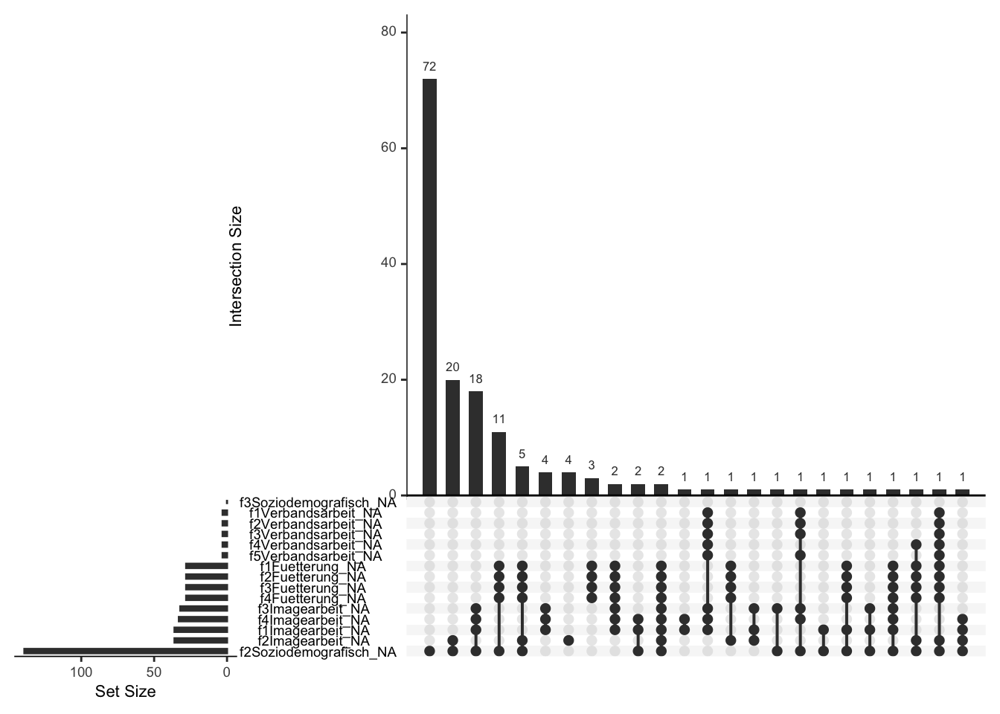
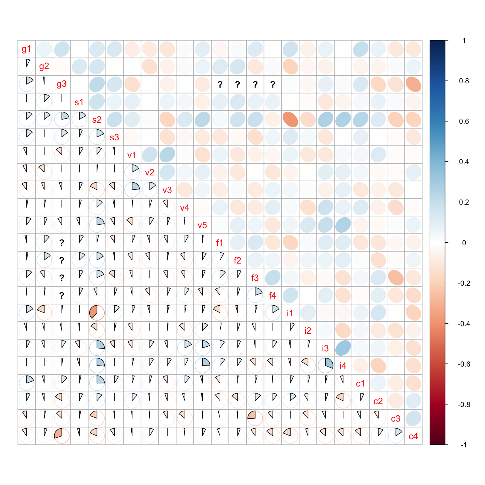
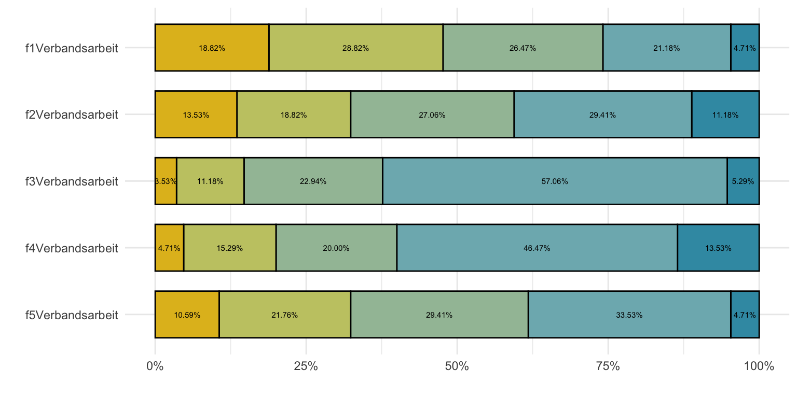
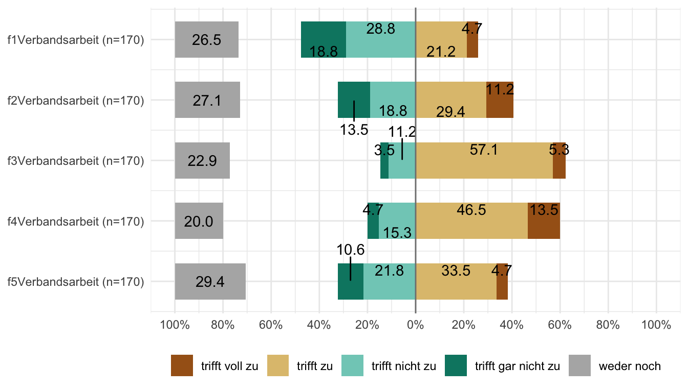
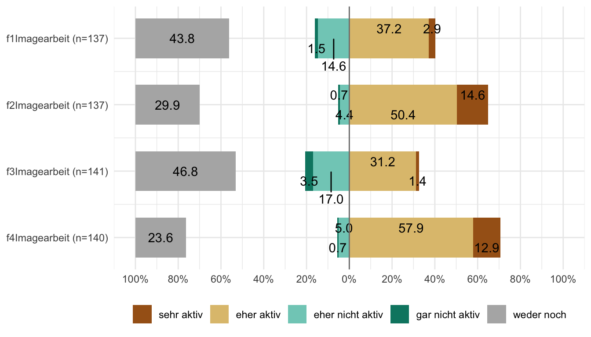
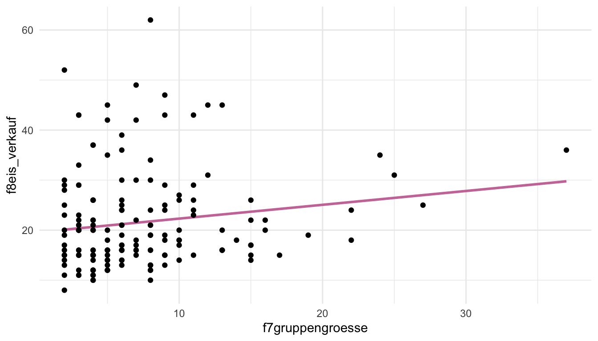
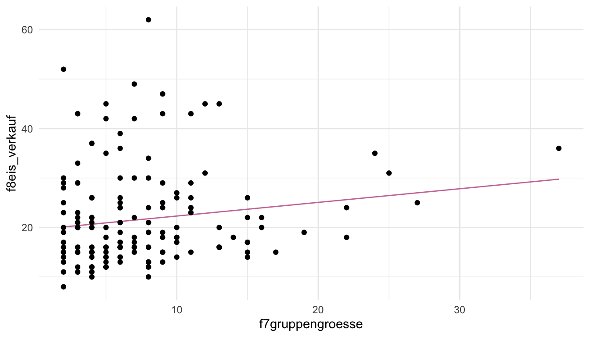
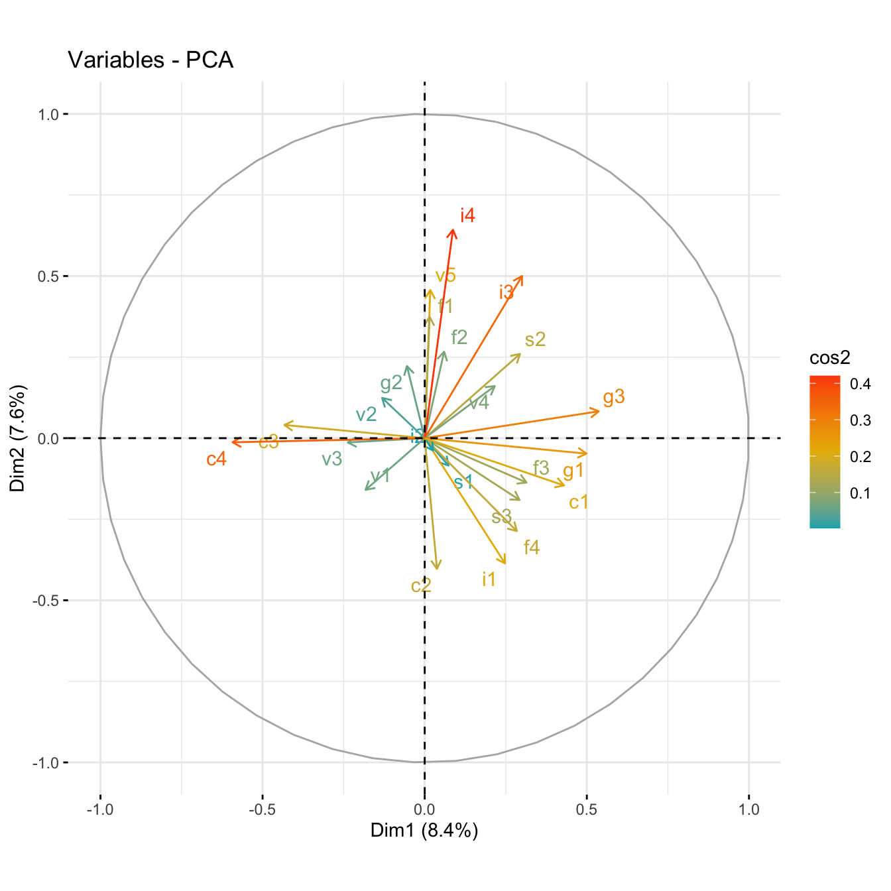
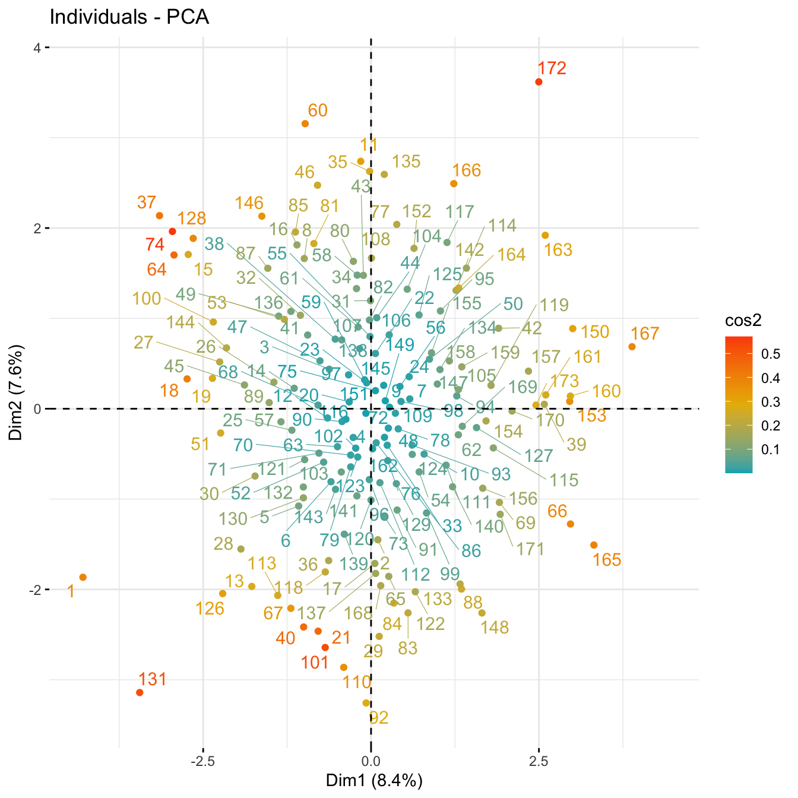

pacman::p_load(tidyverse, gtsummary, janitor, FactoMineR,
factoextra, corrplot, wesanderson, naniar,
scales, likert, sjPlot, parameters, mfp,
correlation, conflicted)61 Fragebogenanalyse
Letzte Änderung am 01. March 2024 um 12:07:53
“It’s always further than it looks. It’s always taller than it looks. And it’s always harder than it looks.” — The Three Rules of Mountaineering (Story und Tait 2019)

Dieses Kapitel ist eine Baustelle und wird es vermutlich auch über das Sommersemester 2024 bleiben. Aktuell weiß ich nämlich noch nicht, wo ich mit dem Kapitel hin will und wo es stehen sollte. Daher können Teile des Codes und des Textes kurzfristig keinen Sinn ergeben oder nicht funktional sein. Es ist geplant eine fertige Version im Juni 2024 vorliegen zu haben.
Der Fragebogen. Ein kompliziertes Stück in der Gesamtbetrachtung. Zum einen ist es die Auswertung der Fragebögen, die auf verschiedenen Methoden basiert. Viele der Methoden habe ich in den vorherigen Kapiteln vorgestellt. Zum anderen können wir hier auch das Design eines Fragebogens nicht unberücksichtigt lassen. Denn ein schlechter Fragebogen wird uns auch nur schlechte Erkenntnisse bringen. Dank der heutigen Technik ist ja ein Online-Query über LifeSurvey schnell erstellt. Der Fragebogen muss dann aber dennoch die Forschungsfragen beantworten können. Da fängt dann der komplizierte Teil an sich zu Überlegen, was mache ich jetzt eigentlich mit den ganzen Fragen und möglichen Antworten. Wir auch in anderen Kapiteln bin ich kein Experte für die Erstellung eines Fragebogens geschweige denn der Durchführung der Befragung in einem entsprechenden Labor. Dafür gibt es dann andere Experten, wie im folgenden Kasten für die Angehörigen der Hochschule Osnabrück. Sicherlich gibt es an deiner Einrichtung auch die entsprechenden Stellen. Hier soll es wie immer um einen ersten Überblick über verschiedene Themen und Herausforderungen der Fragebogenanalyse gehen.
Beratung für Agrarmarketing & Fragebogenerstellung
Ich bin kein Experte für die Untiefen der Fragebogenerstellung an der Hochschule Osnabrück. Hier empfehle ich auf jeden Fall nochmal eine Beratung im Team von Prof. Dr. Ulrich Enneking. Hier in diesem Kapitel kannst du dann die Einführung lesen und erste Ideen für deine Fragebogenanalyse sammeln.
Am Anfang möchte ich noch ein paar Tipps geben, wie die Auswertung leichter von der Hand geht. Ich konzentriere mich hier auf die praktische Auswertung. Natürlich macht es manchmal Sinn von den Regeln abzuweichen, wenn du einen sehr langen Fragebogen hast oder aber eine komplexere Fragestellung beantworten willst. Im Falle einer Abschlussarbeit solltest du aber schauen, das du dir das Leben nicht zu schwer machst. Wir gehen in dem Kapitel nachher noch verschiedene Punkte bei der Auswertung durch, aber es ist natürlich schöner, wenn die Probleme gar nicht erst auftreten können. Hier also eine kurze Sammlung aus anekdotischen Tipps & Tricks beim Fragenbogendesign.
- Nicht zu viele Fragen mit verschiedenen Antwortmöglichkeiten!
-
Wenn du immer wieder andere Antwortmöglichkeiten auf der Likert-Skala definierst, wirst du später Probleme bei der Erstellung der Abbildungen bekommen. Du kannst nämlich nur sinnvoll die gleichen Antwortmöglichkeiten in einer Abbildung kombinieren. Es empfiehlt sich nicht zwischen zu vielen Wortreihen hin und her zu springen. Klar kommt es immer auf die Fragestellung an, aber versuche die Fragen so zu bauen, dass du mit immer den gleichen Antwortmöglichkeiten klar kommst oder sehr wenigern Variationen.
- Gehe von einer Antwortquote oder Rücklaufquote von unter 20% aus!
-
Das ist jetzt vielleicht etwas pessimistisch, aber wie du gleich unten in der Literatur sehen wirst auch nicht unrealistisch. Es gibt Möglichkeiten die Rücklaufquote zu erhöhen, aber dazu mehr dann in der Durchführung weiter unten. Wenn du also über 100 Fragebögen auswerten möchtest, dann musst du ca. 500 Teilnehmer:innen anschreiben oder kontaktieren. Das sind sehr schnell sehr große Zahlen. Und wie du nachher in der Auswertung hier sehen wirst, sind 173 Fragebögen auch nicht so viel. Darüber hinaus dauert es natürlich auch, bis du alle Fragebögen zurück erhalten hast. Bitte beachte als Daumenregel, dass du wirklich Rücklauf von über 100 Fragebögen brauchst, damit du anständige und sinnhafte Auswertungen durchführen kannst. Das kannst du auch selber kurz über den Daumen peilen. Wenn du fünf Antwortmöglichkeiten hast, dann würden bei 100 Teilnehmer:innen bei einer Gleichverteilung jeweils 20 pro Antwortmöglichkeit herauskommen. Damit kann man dann schon arbeiten, bei weniger wird es schon nicht mehr schön bis unmöglich.
- Mache deinen Fragebogen nicht zu lang!
-
Wenn dein Fragebogen zu lang ist, dann wird deine Rücklaufquote noch kleiner und die Teilnehmer:innen füllen eventuell den Fragebogen zum Ende hin nicht mehr gewissenhaft aus sondern wollen nur fertig werden. Daher überlege dir genau, was deine wissenschaftliche Fragestellung ist und ob du wirklich all diese Fragen brauchst um diese zu beantworten.
- Finger weg von Antworten mit einem Freifeldtext!
-
Wenn Teilnehmer:innen etwas selber wo reinschreiben können, dann führt das zu einen unglaublichen Durcheinander und du musst dann im Zweifel hunderte von Freitextfeldern selber zusammenfassen. Jeder Rechtschreibfehler führt zu einem anderen erkannten Item durch einen Computer. So bist du dann gezwungen diese Textfelder selber zu sortieren. Das ist unglaublich aufwendig und selten mit Erfolg gekrönt.
- Vorsicht vor der Antwortkategorie
Sontiges! -
Hinter
Sonstigeskann sich so einiges verbergen und dann weißt du nicht, was diese Antwortmöglichkeit aussagen soll. Am Ende ist dann die AntwortSonstigesnicht mehr als ein fehlender Wert. Die Interpretation ist schwierig, da jeder etwas anderes unterSonstigesversteht. Ja, es ist schwierig Antworten so zu bauen, dassSonstigesnicht gebraucht wird, aber nur so kriegst du dann bessere Antworten, die du auch auswerten kannst. - Muss es
weder nochoderteils-teilsals Antwortkategorie sein? -
Eine neutrale Antwortmöglichkeit ist immer so eine Sache. Durch die neutrale Antwortmöglichkeit können sich dann die Teilnehmer:innen um eine klare Antwort drücken. Ich würde daher eher für eine gerade Anzahl an Antwortmöglichkeiten plädieren, so dass die Teilnehmer:innen sich für eine Seite entschieden müssen. Aber wie immer musst du schauen, was du mit dem Fragebogen erreichen willst. Im ungünstigsten Fall hast du sehr viele neutrale Antworten und kannst eigentlich mit den
egal-Antworten nichts anfangen.
Das soll es auch schon mit der Einführung und dem allgemeinen Tenor gewesen sein. Ich liefere gleich noch einen Abschnitt für die Durchführung mit Literatur nach. Die technische Umsetzung der Fragen erfolgt hier in der Onlineumfrage LimeSurvey | LifeSurvey und die Auswertung in R. Das hat die Gründe, dass zum einen an der Hochschule Osnabrück das Onlinetool LimeSurvey zu freien Verfügung steht und zum anderen dieses Buch sich hier auf R konzentriert. Fragebogenanalysen sind meistens im Kontext einer Abschlussarbeit sehr viele kleine Analysen, denn jede Frage wird ja häufig separat betrachtet oder mit einer anderen kombiniert. Das geht dann auch in Excel insbesondere, wenn der Fokus auch auf der deskriptiven Statistik und Visualisierung liegt.
Ich mache das jetzt alles in Excel und PowerPoint…
Klar, kein Problem. Viele Sachen hier kannst du auch händisch mit (teilweise) bedeutend Mehrarbeit auch händisch in Excel oder PowerPoint lösen. Da spricht dann auch überhaupt nichts dagegen. Wie immer mache ich das hier aber auch aus der Perspektive der Data Science und da machen wir es dann Effizient. Teilweise gehen auch die Methoden hier nicht in Excel. Aber für die Übersichtstabellen und das Zusammenfassen kannst du auch Excel nutzen. Wenn es nicht mehr sein soll, dann reicht es meistens auch.
Auch hier endet die Einführung mit einem Kasten für weitere Tutorien rund um das Thema Fragebogenauswertung. Das Thema ist so umfangreich, dass ich es hier nicht in einem Kapitel wirklich tiefgründig erklären kann. Dafür musst du dann nochmal rechts und links weitergucken. Ich habe versucht die Tutorien wieder etwas zu sortieren und die mir am meisten gefallen haben, weiter oben angeordnet. Nicht alle R Pakete machen auch wirklich Sinn, wenn du nur einen einfachen Fragebogen deskriptiv darstellen willst. Im Zweifel gerne mir mal eine Mail schreiben, dann können wir über die Sachlage sprechen.
Weitere Tutorien für die Fragebogenanalyse
Wir immer geht natürlich mehr als ich hier Vorstellen kann. Du findest im Folgenden Tutorien, die mich hier in dem Kapitel inspiriert haben. Ich habe versucht die Tutorien etwas zu sortieren, so dass die wichtigeren am Anfang stehen. Da aber wichtig nun wirklich kontextabhängig ist, muss du mal schauen was hilft.
- Questionnaires and Surveys: Analyses with R ist ein elichter Einstieg in das Thema mit viel Hilfe und Gedanken zur Erstellung von Fragebögen. Begrifflichkeiten werden geklärt und Probleme und Herausforderungen diskutiert. Habe ich gerne quer gelesen. Ach ja, mit den Tortendiagrammen gehe ich nicht mit… siehe dazu auch weiter unten meine Antwort zu.
- Using R for Social Work Research | Survey Research ist in wunderbares Skript, was eigentlich das gesamte Konzept der Forschung in den Sozialwissenschaften zusammenfasst. Als Einstieg und Erweiterung des Wissens wirklich toll.
- The Epidemiologist R Handbook | Survey analysis ist eine wunderbare Quelle, wenn du schon mit R programmiere kannst und dich tiefer mit der Fragestellung der Analyse von Fragebögen beschäftigen willst. Hier geht es dann auch teilweise sehr ins Detail, aber das ist ja nicht unbedingt schlecht.
- 5 Ways to Effectively Visualize Survey Data Using R ist eine wunderbare Ergänzung, wenn du dich fragst, wie du am besten deine Umfrageergebnisse einmal darstellen sollst. Teile davon zeige ich dir auch hier in diesem Kapitel.
- Da ja Fragebögen auch immer etwas mit den Sozialwissenschaften zu tun haben empfiehlt sich auch ein Blick in das R Paket
{sjPlot}- Data Visualization for Statistics in Social Science. Das R Paket wurde extra für die Sozialwissenschaften gebaut und deren Anwendungen sowie Herausforderungen. - Das Tutorium On Likert scales in R und die On Likert scales in R | PDF Version sowie Descriptive Statistics for Likert Item Data auf Rcompanion von Salvatore Mangiafico liefern nochmal die Betrachtung von Likertskalen und deren Auswertung.
- Analyzing Complex Survey Data liefert Ideen für die Analyse von komplexeren Fragebögen. Ich fand es dann teilweise zu detailiert für dieses Kapitel.
- Analyzing Survey Data in R ist nochmal eine etwas wilde Sammlung an Ideen, wie du deine Fragebogendaten auswerten könntest. Ich empfand es eher als einen Steinbruch an Ideen aus denen man sich dann das beste Raussuchen muss. Je nachdem was du dann in deinem Fragebogen an Variablen drin hast.
- Survey analysis in R und die Vignette des R Pakets
{survey}liefern nochmal mehr Informationen über die Analyse von Fragebogendaten und deren entsprechenden Datenrepräsentation. Hier geht es dann schon sehr tief in Deatil. Wenn du dich also wirklich mit der Analyse von Fragebögen auseinandersetzen willst, dann geht es dann hier in den Kaninchenbau.
61.1 Durchführung
Im Folgenden möchte ich dir einmal eine Übersicht über die Literatur zur Erstellung eines Fragebogens geben. Wir immer ist dies hier nur eine grobe Übersicht. Je nachdem wie komplex deine Fragestellung ist, musst du natürlich auch einen komplexeren Fragebogen nutzen und dann wird die Erstellung des Fragebogens um einiges komplizierter und anspruchsvoller. Wenn es gar noch weiter gehen soll in die Richtung Marktforschung mit Teilnehmer:innen in einem Labor in Präsenz, kommen noch andere Anforderungen hinzu. So weit wollen wir hier aber erstmal nicht gehen. Ich stelle dir hier Ideen und Anregungen für die Erstellung eines Fragebogens für eine Abschlussarbeit vor. Die Literatur ermöglicht sicherlich noch viel mehr. Daher kann ich dir nur empfehlen einmal die Literatur quer zu lesen.
Wie fang ich’s an?
Beginnen wir mit einer schon etwas älteren Arbeit von Watson (1998) mit Titel A primer in survey research. Die Arbeit ist zwar schon etwas älter und damit nicht auf dem neusten Stand was die Onlineumfragen angeht, das gab es ja zur der Zeit noch nicht richtig. Dafür liefert die Arbeit aber einen super Einstieg in die Grundlagen von Umfragen und was du beachten solltest. Teilweise ist es dann auch in einer Art Checkliste geschrieben.
Die Arbeit von Story und Tait (2019) mit dem Titel Survey Research sticht durch die Toolboxen hervor. In der Toolbox for Survey Researchers findest du Tipps & Tricks für dich, wenn du einen Fragebogen erstellst. In der Toolbox for Survey Readers dann die umgedrehte Seite, was muss ich beachten, wenn ich Umfragen lese? Auch toll, da du ja was schreibst, was dann auch gelesen werden soll. Die Arbeit hat noch mehr Tollboxen in denen noch mehr Tipps und Anleitungen gegeben werden. Wenn ich einen Fragebogen in einer Beratung habe, dann gebe ich immer gerne diese Arbeit weiter.
Wenn du dann deine Umfrage gemacht hast kannst du dann bei Gaur u. a. (2020) in ihrer Arbeit Reporting Survey Based Studies – a Primer for Authors lesen wie du deine Umfrage publizieren kannst. Die Arbeit beginnt aber schon etwas früher und präsentiert in einer Liste recht aktuelle Tools for survey-based studies und deren Vor- und Nachteile. In dem Algorithm for a survey construct geben die Autoren nochmal eine Handreichung, wie eine Fragebogenstudie bis zur Publikation aufgebaut sein kann.
Synodinos (2003) gibt in seinem Artikel The “art” of questionnaire construction: some important considerations for manufacturing studies einen sehr detailierten Überblick über die Erstellung eines Fragebogens. Die Arbeit ist interessant, aber auch nur wirklich was für jemanden, der wirklich in die Fragebogenerstellung abtauchen will. Für eine Abschlussarbeit meiner Meinung nach schon zu viel. Ich habe aber die Arbeit gerne einmal quergelesen und die ein oder andere Idee dort mitgenommen. Ich kann mich dann nur folgendem übersetzten Zitat aus seiner Arbeit anschließen.
In der Tat scheinen einige Forscher die Phase der Datenerhebung zu vernachlässigen und sich nur auf ausgeklügelte statistische Verfahren zu konzentrieren. Es kann eindeutig festgestellt werden, dass keine noch so ausgefeilte statistische Analyse die grundlegenden Unzulänglichkeiten eines schlecht konstruierten Fragebogens korrigieren kann. — Synodinos (2003)
Abschließend möchte ich diese kurze Einleitung hier mit der Arbeit von Brühlmann u. a. (2020) mit dem Titel The quality of data collected online: An investigation of careless responding in a crowdsourced sample. Es geht im Prinzip darum, dass die Teilnehmer:innen in einem Onlinefragebogen dann schlampig antworten und irgendwie dann keine Lust mehr haben. Das solltest du beachten, wenn du selber einen Fragebogen baust. Ob du dann deine Analyse so auswerten musst wie die Autoren vorschlagen, würde ich jetzt nicht meinen. Aber habe den Gedanken im Hinterkopf, dass deine Teilnehmer:innen eine Egalhaltung einnehmen könnten während sie den Fragebogen ausfüllen. Das führt uns dann auch gleich zu dem nächsten Thema der Länge eines Fragebogens.
Wie lang soll es sein?
Häufig stellt sich auch die Frage, wie lang soll den so ein Fragebogen sein? Du hast so viele Fragen und wenn dann schon mal einer antwortet, dann kann der doch gefälligst dreißig Seiten Fragebogen ausfüllen? Du kannst dann ja später immer noch Fragen rausschmeißen.
“Kill your darlings, kill your darlings, even when it breaks your egocentric little scribbler’s heart, kill your darlings.” — Steven King
Rolstad u. a. (2011) Response Burden and Questionnaire Length: Is Shorter Better? A Review and Meta-analysis
Roszkowski und Bean (1990) mit Believe it or not! Longer questionnaires have lower response rates
Wie soll ich’s bauen?
The 4,5, and 7 Point Likert Scale
Survey Response Scales: How to Choose the Right One for your Questionnaire
Friedman und Amoo (1999) mit Ratung the rating scales
Wieviele antworten mir?
Edwards u. a. (2009) Methods to increase response to postal and electronic questionnaires
Edwards u. a. (2002) Increasing response rates to postal questionnaires: systematic review
61.2 Genutzte R Pakete
Wir wollen folgende R Pakete in diesem Kapitel nutzen.
Am Ende des Kapitels findest du nochmal den gesamten R Code in einem Rutsch zum selber durchführen oder aber kopieren.
61.3 Daten
Der Druck im Markt auf Bauernhöfe ist groß. Neben den bekannten Erlebnishöfen mit Spezialisierungen auf Obst und Gemüse muss sich in den Weiten Brandenburgs, Niedersachsens und Mecklenburg-Vorpommern jeder Hof was Neues einfallen lassen um Gäste zu sich zu locken. Heutzutage reicht es einfach nicht mehr Rentnern auf Elektrofahrrädern überdimensionierte Sahnetorten anzubieten. Die Enkel wollen auch was sehen. Inspiriert von der Serie Tiger King: Großkatzen und ihre Raubtiere gibt es nun immer mehr Höfe, dich sich den einen oder anderen Tiger oder Großkatze in den Hinterhof sperren. Aufgeschreckt durch den Zwischenfall mit der Löwin von Kleinmachnow - oder wie eine Wildsau durchs Dorf getrieben wurde, gab der Verband “Erlebnishöfe mit Niveau e.V.” eine Umfrage mit dem Titel Nutzung von Großkatzen zur Steigerung der Attraktivität von Erlebnishöfen unter den Mitgliedern in Auftrag. Gleichzeitig sollte auch die Zufriedenheit der Verbandsarbeit abgefragt werden und wie die betriebswirtschaftliche Struktur der 843 Betriebe um die Erlebnishöfe im Verband eigentlich so aussieht.
tiger_tbl <- read_excel("data/survey-serengeti-tiger-king.xlsx", na = "NA",
sheet = "results-survey-lime")In der Tabelle 61.1 sehen wir einen Auszug aus unseren Ergebnis der Umfrage des Verbandes. Wir haben insgesamt 23 Fragen gestellt und eine Rücklauf von 173 Fragebögen von den Erlebnishöfen erhalten. Das ist eigentlich gar nicht so schlecht, damit haben wir hier eine Rücklaufquote von gut \(20.5\%\) der Fragebögen. Wir werden uns nun an den 23 beispielhaften Fragen verschiedene Herausforderungen anschauen.
| geschlecht | alter | haben_Sie_tiger | f1Soziodemografisch | f2Soziodemografisch |
|---|---|---|---|---|
| Männlich | Über 60 Jahre | Ja | Nebenerwerb | Holzwirtschaft |
| Männlich | 30-39 Jahre | Ja | Haupterwerb | NA |
| Männlich | Über 60 Jahre | Ja | Nebenerwerb | NA |
| Männlich | 40-49 Jahre | Ja | Haupterwerb | NA |
| … | … | … | … | … |
| Männlich | 40-49 Jahre | Nein | Nebenerwerb | NA |
| Männlich | Über 60 Jahre | Nein | Haupterwerb | Hofladen |
| Männlich | 40-49 Jahre | Nein | Haupterwerb | NA |
| Männlich | Über 60 Jahre | Nein | Haupterwerb | NA |
Wir werden jetzt den Datensatz einmal versuchen auszuwerten. Dabei gehen wir schrittweise verschiedene Analysen durch und schauen, ob wir mit den Fragebogendaten so arbeiten können. Sehr häufig müssen wir nämlich erstmal die Daten so lange bearbeiten, bis die Daten sinnvoll ausgewertet werden können.
Leider sind die Fragen in den Fragebögen sehr lang. Das macht es schwierig die Fragen sauber als Spaltennamen abzubilden. Wir erhalten zum Beispiel aus dem Online-Query Lime verkürzte Spaltennamen, die sehr wenig aussagen, aber dennoch sehr lang sind. Deshalb empfehle ich immer noch eine zusätzliche Tabelle mit Fragen-ID ques_id, der Lime-ID lime_id sowie der eigentlichen Frage question zu erstellen. Ich mache das meistens dann in einem zusätzlichen Tab in der Exceldatei wie in der folgenden Abbildung gezeigt. In der Exceldatei kannst du dann auch in neuen Tabs die gereinigten oder bearbeiteten Versionen des ursprünglichen Fragebogens ablegen.
Ich lade dann einmal den Tab mit den Beschreibungen der Fragen.
short_question_tbl <- read_excel("data/survey-serengeti-tiger-king.xlsx", sheet = "question-short") In der Tabelle 61.2 siehst du einmal die Fragen in der Langform und die entsprechenden ID’s für die Kurzform hier in R und dann eben auch in Lime. Ich nutze die Kurzform ques_id für die Beschriftungen von Abbildungen, da es sonst sehr schnell sehr unübersichtlich wird. Finale Abbildungen können dann am Ende immer noch entsprechend beschriftet werden. Die lime_id brauche ich um später noch Fragen entfernen zu können und als Verbindung zu den ursprünglichen Daten.
| ques_id | lime_id | question |
|---|---|---|
| g1 | geschlecht | Welches Geschlecht haben Sie? |
| g2 | alter | Wie alt sind Sie? |
| g3 | haben_Sie_tiger | Halten Sie aktuell Tiger oder andere Großkatzen auf Ihrem Erlebnishof? |
| s1 | f1Soziodemografisch | Ist Ihr Erlebnishof Haupterwerb oder Nebenerwerb? |
| s2 | f2Soziodemografisch | Haben Sie weitere Erwerbsquellen neben dem Erlebnishof außer Landwirtschaft? |
| s3 | f3Soziodemografisch | Welche Stellung haben Sie auf dem Erlebnishof inne? |
| v1 | f1Verbandsarbeit | Soll die Verbandsarbeit in den nächsten Jahren digital in den sozialen Netzwerken ausgeweitet werden? |
| v2 | f2Verbandsarbeit | Lesen Sie quartalsweise den Newsletter auf der Verbandshomepage? |
| v3 | f3Verbandsarbeit | Halten Sie die Verbandsarbeit für die Verbreitung von Großkatzen im ländlichen Raum für sinnvoll? |
| v4 | f4Verbandsarbeit | Sehen Sie die Haltung von Großkatzen als eine kulturelle Bereicherung? |
| v5 | f5Verbandsarbeit | Sehen Sie die Notwendigkeit von genetisch veränderten Großkatzen zur Steigerung der Attraktivität des Erlebnishofes? |
| f1 | f1Fuetterung | Füttern Sie täglich Kellog’s Frosties? |
| f2 | f2Fuetterung | Füttern Sie wöchentlich Batzen? |
| f3 | f3Fuetterung | Füttern Sie Joghurt? |
| f4 | f4Fuetterung | Füttern Sie pflanzlich oder gar vegan? |
| i1 | f1Imagearbeit | Wie aktiv sind Sie bei der Lobbyarbeit in den jeweiligen Landeshauptstädten? |
| i2 | f2Imagearbeit | Wie aktiv sind Sie in der positiven Vermarktung des Verbandes in sozialen Netzwerken? |
| i3 | f3Imagearbeit | Wie aktiv sind Sie in der Vermarktung von Tigernachwuchs an Dritte in den sozialen Netzwerken? |
| i4 | f4Imagearbeit | Wie aktiv sind Sie bei der notwendigen Entnahme von Schadwölfen in Ihrem Einflussgebiet? |
| c1 | f5dauer_verletzung | Wie lange schätzen Sie dauert es im Durchschnitt in Tagen bis sich ein Besucher bei Ihnen gefährlich verletzt? |
| c2 | f6einkommen_jahr | Wieviel Einkommen hatten Sie brutto in Tausend EUR im letzten Jahr? |
| c3 | f7gruppengroesse | Wie groß sind ihre Besuchergruppen im Durchschnitt pro Monat? |
| c4 | f8eis_verkauf | Wie viel 100 Liter Eis verkaufen Sie im Durchschnitt pro Monat? |
61.4 Preprocessing
Wenn wir uns mit Fragebögen beschäftigen, dann werten wir meisten nicht alle Fragen aus. Das macht auch meistens keinen Sinn. Denn wir stellen zwar recht viele Fragen, aber am Ende müssen wir auch schauen, ob alle Fragen sinnvoll beantwortet wurden oder aber ob wir sehr viele Nichtantworten haben. Davon hängt dann auch die weitere Analyse ab. Wir können uns auch überlegen einzelne Fragen zusammenzufassen, da wir feststellen, dass wir dann am Ende doch nicht so eine feingliedrige Aufteilung wollen.
Im Weiteren müssen wir dann auch unsere Antworten in Zahlen umwandeln. Wir können ja nur mit Zahlen rechnen. Nur so können wir mittlere Noten ausgeben. Die Umwandlung können wir entweder global wie folgt machen, oder aber wir definieren für jede Antwort die Reihenfolge der Antwortmöglichkeiten. Die automatisierte Zuordnung bewirkt dann, dass wir nicht die Antwortmöglichkeiten in der richtigen, logischen Reihenfolge haben, sondern in der alphanumerischen Ordnung. Für einen ersten Überblick über die Ergebnisse des Fragebogens ist das Vorgehen okay. Später werden wir dann natürlich noch die Fragen richtig formatieren. Aber erstmal müssen wir wissen welche Fragen wir überhaupt auswerten wollen.
tiger_fct_tbl <- tiger_tbl |>
mutate(across(everything(), as_factor))Wenn du gleich die richtige Ordnung ahben willst, dann ist es ein wenig mehr Arbeit. Hier können wir dann über die Funktion ordered() die richtige Ordnung der Antwortmöglichkeiten über die Option levels erreichen. Wir haben hier verschiedene Antwortmöglichkeiten in den verschiedenen Fragen. Daher jetzt einmal die Ordnung der Antworten in logischer Reihenfolge. Mir reicht immer der schnelle Überblick, aber das ist dann ja auch Geschmackssache.
alter_ord <- c("18-29 Jahre", "30-39 Jahre", "40-49 Jahre", "50-59 Jahre", "Über 60 Jahre")
zustimmung_ord <- c("trifft voll zu", "trifft zu", "weder noch", "trifft nicht zu", "trifft gar nicht zu")
aktiv_ord <- c("sehr aktiv", "eher aktiv", "weder noch", "eher nicht aktiv", "gar nicht aktiv")Du siehst, dass ist eine Menge an Arbeit und zu tippen. Deshalb kann ich dir empfehlen, dass nur bei den Fragen zu machen, die du dann am Ende des Daten Preprocessing auch wirklich nutzen willst. Besonders bei Fragebögen mir sehr vielen Fragen wird es sehr schnell sehr lang. Auf der anderen Seite macht man es dann auch nur einmal. Am Ende wandeln wir dann noch alle Fragen, die wir nicht händisch in einen geordneten Faktor umgewandelt haben, in einen Faktor mit der Funktion mutate_if() um.
tiger_ord_tbl <- tiger_tbl |>
mutate(alter = ordered(alter, levels = alter_ord),
f1Verbandsarbeit = ordered(f1Verbandsarbeit, levels = zustimmung_ord),
f2Verbandsarbeit = ordered(f2Verbandsarbeit, levels = zustimmung_ord),
f3Verbandsarbeit = ordered(f3Verbandsarbeit, levels = zustimmung_ord),
f4Verbandsarbeit = ordered(f4Verbandsarbeit, levels = zustimmung_ord),
f5Verbandsarbeit = ordered(f5Verbandsarbeit, levels = zustimmung_ord),
f1Imagearbeit = ordered(f1Imagearbeit, levels = aktiv_ord),
f2Imagearbeit = ordered(f2Imagearbeit, levels = aktiv_ord),
f3Imagearbeit = ordered(f3Imagearbeit, levels = aktiv_ord),
f4Imagearbeit = ordered(f4Imagearbeit, levels = aktiv_ord)) |>
mutate_if(is.character, as.factor)Mit unserem geordneten Objekt tiger_ord_tbl können wir uns jetzt einen ersten Überblick über die Antworten der Fragen geben lassen. Dann entscheiden wir, ob wir Fragen zusammenfassen oder gar entfernen wollen. Eventuell müssen wir auch Antwortmöglichkeiten zusammenfassen, wenn einige Antworten einfach nicht ausgewählt wurden. Aber das schauen wir uns jetzt einmal in einer Übersicht an.
Achtung,
as.factor() vs. as_factor() macht einen Unterschied!
Wenn du deine Wörter <chr> in Zahlen umwandeln willst, dann musst du ja den Umweg über eine Faktorumwandlung gehen. Hier ist es jetzt mal sehr wichtig, dass du die Funktion as.factor() nutzt. Eigentlich nutze ich immer die Funktion as_factor() aber diese Funktion hat ein Feature, was uns hier bei den Fragebögen auf die Füße fällt. Schauen wir uns die Sachlage einmal in einem Beispiel an. Wir haben folgende drei Antworten und wollen diese einmal in einen Faktor umwandeln.
answer_vec <- c("weder_noch", "eher_zufrieden", "sehr_zufrieden")Wenn wir jetzt die Funktion as.factor() nutzen, dann werden unsere Level alphanumerisch sortiert. Das hat den Vorteil, dass jede Frage immer die gleichen Antwortsortierungen erhält. Dadurch ist dann auch gewährleistet, dass in jeder Frage die Antwortmöglichkeiten dann nach der Umwandlung in eine Zahl mit as.numeric() auch wirklich das gleiche Wort bedeutet.
answer_vec |>
as.factor() [1] weder_noch eher_zufrieden sehr_zufrieden
Levels: eher_zufrieden sehr_zufrieden weder_nochDie Sortierung in as_factor() wird nach dem Auftreten des Wortes in dem Vektor gemacht. Das heißt, je nach Frage, hat dann eine Frage eine andere Sortierung der Antwortmöglichkeiten. Das ist unglaublich ungünstig, da wir dann ja nach einer Umwandlung der Faktorenlevel in eine Zahl mit as.numeric() nicht mehr die gleichen Antwortmöglichkeiten hinter jeder Zahl haben!
answer_vec |>
as_factor() [1] weder_noch eher_zufrieden sehr_zufrieden
Levels: weder_noch eher_zufrieden sehr_zufrieden61.4.1 Univariate Analyse
Eigentlich ist die univariate Analyse ja auch gleich ein Teil der Darstellung des Fragebogens und gehört nicht so richtig zum Preprocessing. Auf der anderen Seite sehen wir in der univariaten Analyse auch das erste Mal alle Fragen und Antworten auf einem Blick in einer Tabelle und können dann entschieden, ob wir eine Frage rausnehmen wollen oder eben nicht. Oder ob unsere Antworten zu den Fragen passen oder es auffällige Antwortmuster gibt. Nach was wollen wir nun als erstes einmal Ausschau halten?
- Fehlende Werte
-
Gibt es eine Frage, bei der fast keiner geantwortet hat? Haben wir also eigentlich gar keine Information in der Frage enthalten, da die Antworten fast alle
NAalso fehlend sind? - Gleiche Einträge
-
Gibt es Fragen, bei denen alle das Gleiche geantwortet haben? Haben wir also gar keine Varianz in den Fragen? Wenn alle nur eine und dieselbe Antwort geben, dann ist die Aussage der Frage sehr begrenzt. Wir können dann auch keine Gruppenvergleich rechnen, da ja alle immer das gleiche angekreuzt haben.
- Sehr diverse Antworten
-
Gibt es Fragen, wo die Antworten sehr heterogen sind und sich somit fast nicht sinnvoll zusammenfassen lassen? Das haben wir dann häufig bei Freitextfeldern. Es kann dann sein, dass wir sehr viele verschiedene Antworten erhalten, die wir irgendwie nicht sinnvoll zusammen kriegen.
Für die univariate Analyse nutze ich das R Paket {gtsummary} mit der Funktion tbl_summary(). Die Funktion baut uns über alle Spalten in dem Datensatz eine deskriptive Information mit der Anzahl und der Häufigkeit der jeweiligen Antwortkategorie. Das ist super schnell und super effizient. Innerhalb von Sekunden haben wir unsere Fragen einaml in einer Tabelle wiedergeben. Das einzige was ich hier noch angepasst habe ist, dass ich die Fragen als Text dann als Spaltennamen gesetzt ahbe. So haben wir dann die richtigen Fragen in der Tabelle stehen. Sonst brauchen wir die Langform der Fragen ja nicht in den Abbilungen. Hier in der Tabelle finde ich die richtigen Fragen sehr sinnvoll.
tiger_tbl |>
set_names(short_question_tbl$question) |>
tbl_summary()Ich habe dir jetzt die Ausgabe der Funktion tbl_summary() einmal in dem folgenden Kasten eingeklappt. Sonst sehen wir vor lauter Tabelle nichts mehr und so kannst du hier übersichtlich lesen. Wir sehen, dass die Frage “Haben Sie weitere Erwerbsquellen neben dem Erlebnishof außer Landwirtschaft?” sinnlos war. Zum einen war es Freitext und zum anderen haben wir mit 139 fehlenden Werten kaum Rückmeldungen zu der Frage. In unserem Freitexten sind dann so heterogene Antworten, dass sich hier eine Auswertung nicht sinnvoll durchführen lässt. Auch das Alter hat mit nur drei unter 29 Jährigen eine ungünstige Verteilung. Hier müsste man mal die Antworten zusammenfassen. Wir sehen auch, dass wir eigentlich gar keine Teilnehmerinnen in unserer Umfrage haben. So können wir dann einmal die Fragen durchgehen und dann immer entscheiden, ob wir eine Frage ganz rausnehmen, wie die Frage zu den Erwerbsquellen, oder aber Zusammenfassen müssen.
Univariate Ausgabe der Funktion
tbl_summary()
| Characteristic | N = 1731 |
|---|---|
| Welches Geschlecht haben Sie? | |
| Männlich | 155 (90%) |
| Weiblich | 18 (10%) |
| Wie alt sind Sie? | |
| 18-29 Jahre | 3 (1.7%) |
| 30-39 Jahre | 22 (13%) |
| 40-49 Jahre | 42 (24%) |
| 50-59 Jahre | 49 (28%) |
| Über 60 Jahre | 57 (33%) |
| Halten Sie aktuell Tiger oder andere Großkatzen auf Ihrem Erlebnishof? | |
| Ja | 146 (84%) |
| Nein | 27 (16%) |
| Ist Ihr Erlebnishof Haupterwerb oder Nebenerwerb? | |
| Haupterwerb | 114 (66%) |
| Nebenerwerb | 59 (34%) |
| Haben Sie weitere Erwerbsquellen neben dem Erlebnishof außer Landwirtschaft? | |
| Blumenanbau | 2 (5.9%) |
| Direktvermarktung | 1 (2.9%) |
| Ferienhof | 2 (5.9%) |
| forst | 1 (2.9%) |
| Forst | 3 (8.8%) |
| Forst, LN verpachtet | 1 (2.9%) |
| Forstwirtschaft | 5 (15%) |
| Forstwirtschaft + Verpachtung | 1 (2.9%) |
| Grünland 1,5 ha und 3 ha Wald | 1 (2.9%) |
| Hofladen | 2 (5.9%) |
| Holzwirtschaft | 1 (2.9%) |
| Kartoffeln | 2 (5.9%) |
| Pferde | 2 (5.9%) |
| Pferdehaltung | 1 (2.9%) |
| Schafhaltung | 2 (5.9%) |
| Strohhandel | 1 (2.9%) |
| Vermietung und Verpachtung | 1 (2.9%) |
| Wald | 3 (8.8%) |
| Weihnachtsbäume | 2 (5.9%) |
| Unknown | 139 |
| Welche Stellung haben Sie auf dem Erlebnishof inne? | |
| Angestellter | 1 (0.6%) |
| Betriebsleiter | 141 (82%) |
| Hofnachfolger | 14 (8.1%) |
| König | 5 (2.9%) |
| Leitung Feldwirtschaft | 4 (2.3%) |
| Leitung Tierproduktion | 3 (1.7%) |
| Sonstiges | 5 (2.9%) |
| Soll die Verbandsarbeit in den nächsten Jahren digital in den sozialen Netzwerken ausgeweitet werden? | |
| trifft voll zu | 8 (4.7%) |
| trifft zu | 36 (21%) |
| weder noch | 45 (26%) |
| trifft nicht zu | 49 (29%) |
| trifft gar nicht zu | 32 (19%) |
| Unknown | 3 |
| Lesen Sie quartalsweise den Newsletter auf der Verbandshomepage? | |
| trifft voll zu | 19 (11%) |
| trifft zu | 50 (29%) |
| weder noch | 46 (27%) |
| trifft nicht zu | 32 (19%) |
| trifft gar nicht zu | 23 (14%) |
| Unknown | 3 |
| Halten Sie die Verbandsarbeit für die Verbreitung von Großkatzen im ländlichen Raum für sinnvoll? | |
| trifft voll zu | 9 (5.3%) |
| trifft zu | 97 (57%) |
| weder noch | 39 (23%) |
| trifft nicht zu | 19 (11%) |
| trifft gar nicht zu | 6 (3.5%) |
| Unknown | 3 |
| Sehen Sie die Haltung von Großkatzen als eine kulturelle Bereicherung? | |
| trifft voll zu | 23 (14%) |
| trifft zu | 79 (46%) |
| weder noch | 34 (20%) |
| trifft nicht zu | 26 (15%) |
| trifft gar nicht zu | 8 (4.7%) |
| Unknown | 3 |
| Sehen Sie die Notwendigkeit von genetisch veränderten Großkatzen zur Steigerung der Attraktivität des Erlebnishofes? | |
| trifft voll zu | 8 (4.7%) |
| trifft zu | 57 (34%) |
| weder noch | 50 (29%) |
| trifft nicht zu | 37 (22%) |
| trifft gar nicht zu | 18 (11%) |
| Unknown | 3 |
| Füttern Sie täglich Kellog's Frosties? | |
| Ja | 101 (70%) |
| Nein | 44 (30%) |
| Unknown | 28 |
| Füttern Sie wöchentlich Batzen? | |
| Ja | 111 (77%) |
| Nein | 34 (23%) |
| Unknown | 28 |
| Füttern Sie Joghurt? | |
| Ja | 63 (43%) |
| Nein | 82 (57%) |
| Unknown | 28 |
| Füttern Sie pflanzlich oder gar vegan? | |
| Ja | 40 (28%) |
| Nein | 105 (72%) |
| Unknown | 28 |
| Wie aktiv sind Sie bei der Lobbyarbeit in den jeweiligen Landeshauptstädten? | |
| sehr aktiv | 4 (2.9%) |
| eher aktiv | 51 (37%) |
| weder noch | 60 (44%) |
| eher nicht aktiv | 20 (15%) |
| gar nicht aktiv | 2 (1.5%) |
| Unknown | 36 |
| Wie aktiv sind Sie in der positiven Vermarktung des Verbandes in sozialen Netzwerken? | |
| sehr aktiv | 20 (15%) |
| eher aktiv | 69 (50%) |
| weder noch | 41 (30%) |
| eher nicht aktiv | 6 (4.4%) |
| gar nicht aktiv | 1 (0.7%) |
| Unknown | 36 |
| Wie aktiv sind Sie in der Vermarktung von Tigernachwuchs an Dritte in den sozialen Netzwerken? | |
| sehr aktiv | 2 (1.4%) |
| eher aktiv | 44 (31%) |
| weder noch | 66 (47%) |
| eher nicht aktiv | 24 (17%) |
| gar nicht aktiv | 5 (3.5%) |
| Unknown | 32 |
| Wie aktiv sind Sie bei der notwendigen Entnahme von Schadwölfen in Ihrem Einflussgebiet? | |
| sehr aktiv | 18 (13%) |
| eher aktiv | 81 (58%) |
| weder noch | 33 (24%) |
| eher nicht aktiv | 7 (5.0%) |
| gar nicht aktiv | 1 (0.7%) |
| Unknown | 33 |
| Wie lange schätzen Sie dauert es im Durchschnitt in Tagen bis sich ein Besucher bei Ihnen gefährlich verletzt? | 75 (26, 131) |
| Wieviel Einkommen hatten Sie brutto in Tausend EUR im letzten Jahr? | 769 (395, 1,326) |
| Wie groß sind ihre Besuchergruppen im Durchschnitt pro Monat? | 6.0 (4.0, 9.0) |
| Wie viel 100 Liter Eis verkaufen Sie im Durchschnitt pro Monat? | 19 (15, 25) |
| 1 n (%); Median (IQR) | |
61.4.2 Fehlende Werte
Warum haben wir fehlende Werte in einem Fragebogen? Wenn wir nicht die Teilnehmer:innen zwingen jede Frage zu beantworten, dann kann es sein, dass einige Fragen nicht beantworten. Warum das so ist, ist eine gute Frage. Wenn die unbeantworteten Fragen gegen Ende auftreten, dann mag es Ermüdung sein. Ab und an übersieht man eventuell auch eine Frage oder aber versteht die Frage nicht. Es gibt also eine Menge Möglichkeiten. In unserem Beispiel treten fehlende Antworten bei der Fütterung auf. Wenn ein Hof keine Tiger hat, dann muss er auch die Tiger nicht füttern. Das macht dann eher einen Block an fehlenden Daten aus. Wir wollen jetzt einmal das R Paket {naniar} nutzen um fehlende Werte zu visualisieren. Etwas dagegen tun, werden wir hier nicht, dazu gibt es dann ein extra Kapitel Imputation von fehlende Werten in diesem Buch.
In der Abbildung 61.2 siehst du einmal die fehlenden Werte als schwarzen Balken dargestellt. Die Spalten stellen dabei die Fragen dar und die Prozente hinter den Fragen die Anteile an fehlenden Werten. Teilweise wird hier die letzte Spalte abgeschnitten und wir müssten hier dann besser mit den verkürzten Namen arbeiten. Da ich aber die Abbildungen nur für eine Übersicht für mich selber nutze, kann ich damit leben. Wir sehen einmal als Block die fehlenden Werte für die Fütterung. Das sind all die Teilnehmer:innen, die keine Tiger halten. Dann siehst du noch einige horizontale Linien. Diese Linien sind Teilnehmer, die systematisch keine Fragen beantwortet haben. Sonst haben wir eigentlich keine richtigen auffälligen Muster in den Daten. Die Imagearbeit wurde nur relativ spärlich im Vergleich zur Verbandsarbeit beantwortet.
tiger_tbl |>
vis_miss() Häufig stellt sich dann auch die Frage, wie denn die fehlenden Werte untereinander zusammenhängen. Haben viele nur eine Frage nicht beantwortet oder haben die Teilnehmer dann auch andere Fragen ebenfalls ähnlich nicht beantwortet? Diese Zusammenhänge versucht die Abbildung 61.3 darzustellen. Wir haben einmal für fünfzehn Kombinationen der fehlenden Werte die Anzahlen dargestellt. So sehen wir das wir bei 72 Personen keine Antwort bei der Frage f2Soziodemografisch haben. Sonst finden Sie bei diesen Personen aber keine weiteren fehlenden Werte. Anders sieht es dann bei den nächsten zwanzig Personen aus. Hier haben wir fehlende Werte bei der Frage f2Soziodemografisch und f2Imagearbeit. So können wir dann schauen, ob wir auch dort noch Muster erkennen. Wir sehen auch wieder die Blöcke der Fütterungsfrage. Da haben wir natürlich dann auch immer die vier Fragen zur Fütterung als fehlend.
tiger_tbl |>
gg_miss_upset(nsets = 15)

Am Ende werten wir ja viele Fragen erstmal alleine aus. Daher schauen wir uns an, wie die Verteilung der Antworten pro Frage ist. Daher macht es dort noch nicht so viel aus, wenn du fehlende Werte hast. Wenn du dann aber Fragen miteinander in Bezug setzen willst und eventuell die Anteile der Antworten in Beziehung setzen willst, dann macht schon was aus, wie viele fehlende Werte du pro Frage hast. Aber auch hier kommt es dann sehr stark auf den Kontext und die einzelnen Fragen an. Daher kann ich dir hier keine generelle Antwort liefern. Wichtig ist erstmal, dass du das Problem der fehlenden Werte kennst und darstellen kannst.
Jetzt können wir noch ein wenig Zahlen wiedergeben lassen. Wir wollen ja auch wissen, wie viele fehlenden Werte wir dann in den Daten überhaupt haben. Dafür können wir dann die fehlenden Werte über die Funktion n_miss() zählen und durch die gesamte Anzahl an Beobachtungen mit n_complete() teilen. Wir kriegen dann raus, dass wir gut 11.3% fehlende Werte in unserem Datensatz haben.
n_miss(tiger_tbl)/n_complete(tiger_tbl)[1] 0.1126957Über die Funktion miss_case_summary() kannst du dir dann noch mehr Informationen zu den einzelnen Beobachtungen wiedergeben lassen. Über die Funktion print() kannst du dir dann noch mehr Zeilen als die normalen zehn Zeilen ausgeben lassen.
tiger_tbl |>
miss_case_summary() |>
print(n = 12)# A tibble: 173 × 3
case n_miss pct_miss
<int> <int> <dbl>
1 66 11 47.8
2 158 9 39.1
3 173 9 39.1
4 79 8 34.8
5 170 8 34.8
6 31 7 30.4
7 154 7 30.4
8 155 7 30.4
9 160 7 30.4
10 147 6 26.1
11 151 6 26.1
12 159 6 26.1
# ℹ 161 more rowsSchauen wir uns mal die Personen mit sieben oder mehr fehlenden Werten einmal an. Wir nutzen dazu die Funktion slice(), die es uns erlaubt die Zeilen zu extrahieren, welche für die Beobachtungen stehen.
tiger_tbl |>
slice(c(66, 158, 173, 79, 170, 31, 154, 155, 160))# A tibble: 9 × 23
geschlecht alter haben_Sie_tiger f1Soziodemografisch f2Soziodemografisch
<chr> <chr> <chr> <chr> <chr>
1 Weiblich 30-39 Jahre Ja Haupterwerb <NA>
2 Männlich 40-49 Jahre Nein Nebenerwerb <NA>
3 Männlich Über 60 Ja… Nein Haupterwerb <NA>
4 Männlich Über 60 Ja… Ja Nebenerwerb Forst
5 Männlich 40-49 Jahre Nein Nebenerwerb <NA>
6 Männlich 50-59 Jahre Ja Nebenerwerb <NA>
7 Männlich Über 60 Ja… Nein Nebenerwerb <NA>
8 Männlich 40-49 Jahre Nein Nebenerwerb Pferde
9 Weiblich 40-49 Jahre Nein Haupterwerb Wald
# ℹ 18 more variables: f3Soziodemografisch <chr>, f1Verbandsarbeit <chr>,
# f2Verbandsarbeit <chr>, f3Verbandsarbeit <chr>, f4Verbandsarbeit <chr>,
# f5Verbandsarbeit <chr>, f1Fuetterung <chr>, f2Fuetterung <chr>,
# f3Fuetterung <chr>, f4Fuetterung <chr>, f1Imagearbeit <chr>,
# f2Imagearbeit <chr>, f3Imagearbeit <chr>, f4Imagearbeit <chr>,
# f5dauer_verletzung <dbl>, f6einkommen_jahr <dbl>, f7gruppengroesse <dbl>,
# f8eis_verkauf <dbl>Wir sehen dann einmal die ganzen Personen, die sehr viele fehlenden Werte bei den Antworten haben. Ich möchte jetzt ungern noch mehr Beobachtungen rauschmeißen, die keine Tiger halten. Deshalb bleiben fliegen nur die drei Tigerhalter aus den Daten und der Rest bleibt drin. Das ist jetzt eine bewusste Entscheidung von mir, du musst dann schauen, wie du das in deinen Daten machst. Dann entferne ich einmal die drei Beobachtungen mit slice() aus meinen Daten.
tiger_tbl <- tiger_tbl |>
slice(-c(66, 79, 31))Dann schauen wir zum Anschluss nochmal, ob wir auch das entfernt haben, was wir entfernen wollten. In der Abbildung 61.4 siehst du nochmal die Visualisierung der fehlenden Werte nachdem wir unsere drei Beobachtungen entfernt haben. Das sieht soweit super aus, denn wir haben jetzt schon ein etwas einheitlicheres Bild vorliegen.
tiger_tbl |>
vis_miss()
Imputation von fehlenden Werten
Eine Möglichkeit mit fehlenden Werten umzugehen ist die Imputation von fehlende Werten, die ich in einem anderen Kapitel erläutere. Ich wäre aber mit dem Einsatz der Methoden sehr vorsichtig, da diese Methoden teilweise nicht in Veröffentlichungen anerkannt werden. Die Kritik lautet dabei, dass künstliche Daten erstellt werden, die nicht den realen Hintergrund abbilden. Daher ist die Verwendung von einem Imputationsalgorithmus immer gesondert zu diskutieren und zu bewerten.
61.4.3 Korrelation
Warum Korrelation der Fragen? Nun es kann sein, dass wir Fragen gebaut haben, die eventuell das Gleiche abfragen. Oder aber, dass die Teilnehmer:innen unseres Fragebogen eine Frage genau so beantworten wie eine andere Frage. Das lässt sich bei der Vielzahl an Fragen kaum überblicken. Deshalb schauen wir uns einmal die Korrelation zwischen den Fragen an um zu sehen, ob wir nicht Fragen haben, die das Gleiche aussagen.
Zuerst bauen wir uns einen Datensatz tiger_clean_num_tbl indem alle Spalten nur noch numerisch sind. Wir können die Korrelation nur mit numerischen Spalten rechnen. Wenn du noch Wörter als Antworten in den Spalten stehen hast, dann kannst du über as.factor() erstmal die Antworten in Faktoren umwandeln. Das habe ich hier schon gemacht und nutze daher den Datensatz tiger_fct_tbl. Am Ende setze ich dann noch die Bezeichnung der Fragen auf die Abkürzungen der Fragen, sonst klappt es nicht richtig mit der Darstellung. Dafür sind dann die ursprünglichen Spaltenbezeichungen zu lang.
tiger_clean_num_tbl <- tiger_fct_tbl |>
mutate_all(as.numeric) |>
set_names(short_question_tbl$ques_id)Wenn du dir nur die Korrelation zwischen den Spalten hier anschaust, dann nutze zuerst die Option use = "pairwise.complete.obs". Dann werden nur die Beobachtungen genutzt die in den jeweiligen Spalten, die verglichen werden, vorhanden sind. Ich nutze hier dann auch den Korrelationskoeffizienten nach Pearson. Da wir eigentlich keine normalverteilten Daten in den Antwortmöglichkeiten vorliegen haben, müsste ich eigentlich besser Spearman nutzen, aber Spearman neigt zu Fehlern, wenn die Daten nicht richtig passen. Da ich mir hier aber nur einen groben Überblick verschaffen möchte, kommt es auf Abweichungen in dem Korrelationskoeffizienten nicht an. Auch wenn mein Korrelationskoeffizienten verzerrt ist, wird ein hoher Korrelationskoeffizienten nach Pearson auf eine Korrelation hindeuten. Das ist ja auch nur mein Ziel hier, nämlich ähnliche Fragen zu erkennen. Den berechneten Korrelationskoeffizienten nehme ich dann aber nicht zu ernst. Am Ende nehme ich noch die Frage f2Soziodemografisch aus der Betrachtung, da hier zu viele fehlende Werte vorliegen.
cor_mat <- tiger_clean_num_tbl |>
select(-matches("Soziodemografisch")) |>
cor(use = "pairwise.complete.obs")Ich könnte mir jetzt die berechnete Korrelationsmatrix cor_mat einmal in R als Matrix anschauen. Schöner ist es in der Abbildung 61.5 als Korrelationsplot. Trotz der Verwendung des Korrelationskoeffizienten nach Person konnten wir nicht für alle paarweisen Vergleiche der Fragen eine Korrelation berechnen. Wenn es nicht möglich war, dann sehen wir ein Fragezeichen in der Abbildung. Wenn wir eine zeitlang auf die Abbildung schauen, sehen wir, dass wir eigentlich keinen große Korrelation zwischen den Fragen haben. Der größte Wert ist \(-0.38\) sowie \(0.31\) und damit noch sehr nah an der Null und keiner Korrelation. Ich bin somit mit der Korrelation zufrieden. Wir müssen keine Fragen zusammenfassen oder entfernen, weil die Korrelation zwischen den Fragen zu groß ist und damit die Fragen das Gleiche aussagen.
corrplot(cor_mat, method = 'number',
col = rev(wes_palette("Zissou1", 8, type = "continuous")))
corrplot.mixed(cor_mat, lower = 'pie', upper = 'ellipse')

61.4.4 Zusammenfassen
Manchmal wollen wir dann doch Fragen zusammenfassen. Irgendwie stellen wir fest, nachdem wir die Antworten gesehen haben, dass wir dann doch irgendwie nicht so eine detaillierte Fragenaufteilung wollen. Dann können wir natürlich auch Fragen zusammenfassen. Eine goldene Regel gibt es dafür nicht, ich zeige aber mal die eine oder andere Möglichkeit. Es kann auch sein, dass wir festgestellt haben, dass einzelne Fragen sehr stark miteinander korrelieren und wir deshalb die Fragen zusammenfasen wollen anstatt eine der Fragen aus der Analyse zu nehmen. Neben dem Fragen zusammenfassen, können wir auch Antwortkategorien zusammenfassen. Wir wollen dann nicht die fünf Antwortmöglichkeiten sondern eben nur drei oder zwei. Dann können wir das auch machen, müssen es nur in unserem Report oder der Abschlussarbeit berichten.
…von einzelnen Fragen
Im Folgenden habe ich mich dazu entschieden, dass mich die Fütterung dann doch nicht so sehr im Detail interesiert. Ich möchte dann alle Fragen einmal zusammenfassen, die mit der Fütterung zu tun haben. Dafür nutze ich dann den folgenden Code. Die Idee ist sehr simple. Ich addiere die Spalten für Fütterung auf und erhalte die neue Spalte Feutterung. Dann kann ich entscheiden, wie ich mit der Spalte weiter umgehen will. Theoretisch können natürlich noch andere mathematischen Operatoren, wie Subtraktion einer Spalte von der anderen oder das Produkt genutzt werden. Da kommt es dann aber auf das konkrete Beispiel an. Der BMI ist sicherlich die bekanneste Zusammenfassung. Häufig kennen die Teilnehmer:innen ihre Größe und das Gewicht, aber selten den BMI oder wissen die entsprechende Formel.
feed_tbl <- tiger_fct_tbl |>
select(matches("Fuetterung")) |>
mutate(across(matches("Fuetterung"), \(x) as.numeric(x)-1)) |>
mutate(Fuetterung = rowSums(across(matches("Fuetterung"))))In der Tabelle 61.4 siehst du dann einmal das Ergebnis unserer Summenbildung über die Spalten der Fütterung. Wir haben jetzt in der Spalte Fuetterung die Summen der Spalten enthalten. Je größer die Zahl, desto mehr wurde gefüttert. Wenn ich das mal so ganz allgemein formulieren will.
Fuetterung. Ein hoher Wert bedeutet, dass eben viel gefüttert wurde.
| Fuetterung | f1Fuetterung | f2Fuetterung | f3Fuetterung | f4Fuetterung |
|---|---|---|---|---|
| 0 | 0 | 0 | 0 | 0 |
| 3 | 1 | 0 | 1 | 1 |
| 1 | 1 | 0 | 0 | 0 |
| 2 | 1 | 0 | 0 | 1 |
| 2 | 1 | 0 | 0 | 1 |
| 1 | 0 | 0 | 0 | 1 |
| 4 | 1 | 1 | 1 | 1 |
Wir nutzen jetzt einmal die Funktion tabyl() um uns die prozentuale Verteilung der neuen Einträge in der Spalte Futterung anzeigen zu lassen. Ich empfehle immer die Spalte valid_percent vorzuziehen, da wir in dieser Spalte nicht die fehlenden Werte mit reingerechnet haben.
feed_perc_obj <- feed_tbl |>
tabyl(Fuetterung) |>
round(2)In der Tabelle 61.5 sehen wir dann einmal die Übersicht unser Zusammenfassung. Spannenderweise füttern sechs Betriebe ihre Tiger gar nicht. Was ein spannendes Ergebnis ist. Oder aber sie füttern die Tiger nicht nach den entsprechenden Fragen. Das kann natürlich auch Auftreten. Wie wir jetzt die Zusammenfassung weiter interpretieren ist so ein Sache. Das Beispiel ist jetzt etwas konstruiert, aber wir wissen immerhin, dass die meisten Teilnehmer:innen zwei der Fütterungsfragen mit Ja beantwortet haben.
Fuetterung nach den neuen Einträgen und den entsprechenden prozentualen Auftreten. Die vorzuziehende Spalte valid_percent beschreibt das prozentuale Auftreten ohne die fehlenden Werte in der Spalte.
| Fuetterung | n | percent | valid_percent |
|---|---|---|---|
| 0 | 6 | 0.03 | 0.04 |
| 1 | 38 | 0.22 | 0.26 |
| 2 | 50 | 0.29 | 0.34 |
| 3 | 39 | 0.23 | 0.27 |
| 4 | 12 | 0.07 | 0.08 |
| NA | 28 | 0.16 | NA |
… von Antwortenmöglichkeiten
Manchmal ist es sinnvoll Antwortmöglichkeiten zusammenzulegen. In unserem Fragebogen haben wir zum Beispiel nur drei 18 bis 29 Jährige. Das ist echt wenig. Dann können wir diese drei Personen auch zu den 30 bis 39 Jährigen packen und eine neue Kategorie erschaffen. Dann fassen wir die beiden mittleren Kategorien auch noch zusammen, weil wir es können. Wir nutzen dazu die R Funktion case_when() mit der wir uns dann nach Regeln neue Werte erschaffen können. Hier einmal das Beispiel für das Alter. Ich behalte mir immer die alte Spalte mit in den Daten um im nachhinein nochmal zu schauen, ob auch alles richtig transformiert wurde.
alter_combined_tbl <- tiger_fct_tbl |>
select(alter) |>
mutate(alter_recode = case_when(alter %in% c("Über 60 Jahre") ~ ">60 Jahre",
alter %in% c("40-49 Jahre", "50-59 Jahre") ~ "40-59 Jahre",
alter %in% c("18-29 Jahre", "30-39 Jahre") ~ "<39 Jahre")) |>
mutate(alter_recode = ordered(alter_recode, levels = c("<39 Jahre", "40-59 Jahre", ">60 Jahre")))Dann wollen wir uns nochmal das Ergebnis als eine Tabelle anschauen um zu sehen, ob auch alles in der Transformation geklappt hat. Ziel soll es ja sein Kategorien zu finden, die dann auch wirklich Beobachtungen enthalten. Wenn wir uns also wieder halb leere Kategorien bauen, dann müssen wir nochmal ran.
alter_combined_perc_obj <- alter_combined_tbl |>
tabyl(alter_recode) |>
mutate_if(is.numeric, round, 2)In der Tabelle 61.6 siehst du dann das Ergebnis der Zusammenfassung der Antwortkategorien zum Alter. Wir haben zwar in der kleinsten Kategorie immer nur noch 14% der Beobachtungen aber das sind jetzt immerhin 25 Personen und nicht mehr 3 Teilnehmer. Das macht dann schon einen Unterschied mit dem wir dann besser rechnen könnten.
Alter nach neuen, selbstdefinierten Kriterien. Ziel war es wenig belegte Kategorien zusammenzufassen.
| alter_recode | n | percent |
|---|---|---|
| <39 Jahre | 25 | 0.14 |
| 40-59 Jahre | 91 | 0.53 |
| >60 Jahre | 57 | 0.33 |
Am Ende ist es natürlich wichtig, das du dann im Methodenteil deiner Arbeit oder Veröffentlichung genau beschreibst, wie du und warum du die Antwortmöglichkeiten zusammengefasst hast. Allgemein spricht nichts dagegen Antworten zusammenzufassen, es sollte nur nicht der Anschein erweckt werden, dass du dir dann am Ende die Ergebnisse zurechtbiegst.
61.4.5 Flowchart
Das Flussdiagramm (eng. flowchart) liefert nochmal eien schönen Überblick über das Preprocessing der Daten. Du kannst damit gut zeigen, wie sich die Anzahl der Teilnehmer:innen von der Rekrutierung hin zur eigentlichen Analyse entwickelt hat. Es gibt eine große Anzahl an möglichen Darstellungsformen, wie eine Google Suche nach consort flowchart zeigt. Deshalb gibt es auch nicht die Flowchart für eine Fragebogenanalyse. Lasse dich einfach inspiereine und beie deine Flowchart so, dass jeder einfach sehen kann, wie sich diene Anzahl der Teilnehmer:innen geändert hat. Es kann auch sein, das deien Flowchart nur aus drei Kacheln besteht. Das ist dann auch in Ordnung und trotzdem besser als ein Fließtext.
In der Abbildung 61.6 siehst du dann einmal eine beispielhafte Flowchart für unseren Fargebogen zu der Haltung von Großkatzen. Ich habe die Flowchart in PowerPoint gebaut und die PowerPoint Vorlage kannst du gerne selber verändern. Wie du dann so eien Flowchart aufbaust, hängt dann sehr von deinen Daten ab. In dem Kasten der entfernten Fragen, habe ich die gängigen Kriterien einmal aufgeführt. Du musst die nicht alle in der Form durchgehen. Es kann auch sein, dass du aus anderen Gründen Fragen entfernen möchtest, weil die Fragen zum Beispiel dann doch nicht mehr zur Forschunsgfrage passen. Ich habe dann noch unten die bivariaten Vergleiche für die beiden Fragen zur Haltung von Großkatzen und dem Erwerb zugefügt. Das kann man machen, muss man aber nicht. Je nachdem was du noch gemacht hast, kannst gerne noch weitere Kacheln hinzufügen oder aber Arme ergänzen.
Geht das Ganze auch in R?
Natürlich können wir auch eine Flowchart mit etwas Aufwand in R bauen. Hier gibt es einmal das Tutorium Building a flowchart sowie das R Paket {DiagrammeR} mit dem entsprechenden Tutorium Data-driven flowcharts in R using {DiagrammeR}. Eine Weitere Alternative ist das Tutorium Introducing {ggflowchart} wobei hier die Flowcharts eher sehr simple gehalten sind.
61.4.6 Repräsentative:r Teilnehmer:innen
Wenn ich einen Fragebogen auswerte, dann lasse ich mir gerne eine Tabelle der repräsentativen Teilnehmer rausgeben. Nicht immer funktioniert es, denn wir brauchen natürlich auch einiges an Teilnehmern. Manchmal sind die Anzahlen auch zu gering, dass ich von einem repräsentativen Teilnehmer sprechen würde. Nichtsdestotrotz, ich schaue mir das gerne einmal an. Ich schaue mir dafür die demographischen Fragen einmal an und erstelle mir dann eine Tabelle mit den Eigenschaften der häufigsten Teilnehmern. In unserem Fall möchte ich wissen, ob es Überschneidungen im Geschlecht, dem Alter sowie den Erwerb und der betrieblichen Stellung gibt. Technisch klebe ich die vier Spalten einfach mit str_c() zu einem String zusammen und zähle dann wie oft so ein String dann vorkommt. Dafür nutze ich die Funktion tabyl(), die mir sehr angenehm die Anzahlen und Prozente wiedergibt. Die Funktion reframe() erlaubt es uns dann die Rückgabe von tabyl() in einen Datensatz.
most_common_participant_tbl <- tiger_tbl |>
select(geschlecht, alter, f1Soziodemografisch, f3Soziodemografisch) |>
mutate(string = str_c(geschlecht, alter, f1Soziodemografisch, f3Soziodemografisch, sep = " ")) |>
na.omit() |>
reframe(janitor::tabyl(string)) |>
arrange(desc(n)) |>
mutate(percent = percent(percent))In der Tabelle 61.7 findest du die tabellarische Übersicht über die vier häufigsten Teilnehmer in unserem Fragebogen nach den oben ausgewählten vier demographischen Fragen. Du siehst hier sehr schön welches Problem unsere Teilnehmer haben. Gut 50% der häufigsten Teilnehmer sind männlich und Betriebsleiter. Wir haben nur eine kleine Variation im Erwerb und im Alter. Wobei der Großteil unser Teilnehmer eben dann auch schon alt ist.
| Anzahl | [%] | |
|---|---|---|
| Männlich 50-59 Jahre Haupterwerb Betriebsleiter | 27 | 15.88% |
| Männlich Über 60 Jahre Haupterwerb Betriebsleiter | 24 | 14.12% |
| Männlich 40-49 Jahre Haupterwerb Betriebsleiter | 21 | 12.35% |
| Männlich Über 60 Jahre Nebenerwerb Betriebsleiter | 19 | 11.18% |
Musst du die Tabelle jetzt angeben? Vermutlich nicht. Aber wir wissen jetzt immerhin, wie sich unsere Population zusammensetzt. Das müssen wir natürlich beachten, wenn wir unsere Rückschlüsse aus dem Fragebogen ziehen. Das erlaubt uns dann auch eine sorgfältigere Diskussion unserer Ergebnisse.
61.5 Visualisierung
Wie solltest du die Ergebnisse eines Fragebogens darstellen? Damit wir hier nicht immer wieder die Barplots oder Säulendiagramme aus dem Hut ziehen, zeige ich dir hier nochmal andere Möglichkeiten, die sehr ähnlich sind, aber doch anders. Prinzipiell ist es natürlich auch wieder nichts anderes als Säulendiagramme, aber dann doch in schöner. Wichtig ist nur, das du dir bewusst machst, welche Fragen du zusammen zeigen möchtest. Es macht meistens keinen Sinn alle Fragen in einer Abbildung darzustellen oder eben nur eine Frage zu visualisieren. Du willst ja meistens den Zusammenhang zwischen verschiedenen Fragen zeigen. Daher überlege dir, welche Fragen du zusammen in einem Block zeigen möchtest. Die Blöcke kannst du dann thematisch benennen und so dem Leser es einfacher machen deinen Gedankengang in der Auswertung zu folgen.

Eine Sache möchte ich dann aber doch noch loswerden und zwar meine tiefe Abneigung gegenüber Tortendiagrammen (eng. pie charts). Gerne kannst du Tortendiagramme in deiner Arbeit verwenden, ich kann dir nur sagen warum ich sie nichts nutzen würde. Neben dem wunderbarer Cartoon von Wulff & Morgenthaler gibt es aber noch andere wissenschaftlichere Gründe, die gegen die Verwendung sprechen. Barnett und Oguoma schreiben in Here’s why you should (almost) never use a pie chart for your data folgendes Fazit dem ich mich anschließen möchte.
Whenever we see pie charts, we think one of two things: their creators don’t know what they’re doing, or they know what they are doing and are deliberately trying to mislead. — Barnett, A. und Oguoma V. (2024)
Besuche gerne die Quelle und schaue dir die Visualisierungen einmal an. Beide zeigen sehr schön in dem Beitrag warum Tortendiagramme sehr verzerrend wirken und häufig nicht das mitteilen was man möchte. Die Beispiel finde ich sehr überzeugend. Es gibt mit Siirtola (2019) auch eine wissenschaftliche Veröffentlichung The Cost of Pie Charts die als Fazit unter anderem folgendes Zitat hat.
The results show that the pie chart is slower and less accurate than the stacked bar chart, especially when the difference between the elements is small, but the participant find it slightly more pleasant to use. The participants also perceive the stacked bar chart as the most effective visualization. — Siirtola (2019)
Also klare Empfehlung für gestapelte Balkendiagramme für die Darstellung. Dann wollen wir uns verscheidende Pakete und deren Realisierung von der Darstellung von Likert Daten anschauen. Ich habe mir jetzt drei Pakete rausgesucht, die uns dabei behilflich sein können. Dann schauen wir uns im Folgenden einmal die Darstellung der Likert-Skala in drei R Paketen an.
- Dem R Paket
{likert}, dem auch irgendwie eine gute Tutoriumsseite des Paketes fehlt. Hier hilft dann das Tutorium Survey data I/O with{likert}weiter. - Dem R Paket
{ggplot2}, als Selbstbausatz in unserem universalen Visualisierungspaket. - Dem R Paket
{sjPlot}als eine weitere Möglichkeit Daten mit dem Fokus aus den Sozialwissenschaften darzustellen.
Wir immer kannst du schauen, ob du diese Pakete nutzt willst oder dann doch zu Excel umschwenkst. Prinzipiell lässt sich ja auch alles mit etwas mehr Arbeit in Excel nachbauen. Die Pakete erleichtern einem meiner Meinung nach nur die Darstellung.
61.5.1 … mit {likert}
Ich zeige hier nur einen Ausschnitt mit einer einzigen Abbildung. Wenn du mehr zu dem R Paket {likert} erfahren möchtest, dann nutze das tolle Tutorium Survey data I/O with {likert}. Wenn ich hier das gesamte Tutorium nachkoche ist ja dann auch niemanden geholfen. Was ist also die Idee des R Paketes {likert}? Wir können mir der Funktion likert() Fragen in der selben Likertskala zusammen in einer Abbildung darstellen. Wichtig ist hier, dass das Paket schon etwas älter ist und nur ein Objekt als data.frame() und keine tibble() akzeptiert.
In der Abbildung 61.8 siehst du einmal die Darstellung der fünf Fragen zur Verbandsarbeit. Die Funktion likert() sortiert dabei auch nochmal sinnig deine Fragen von dem Anteil trifft zu und trifft voll zu zu den Anteilen von trifft gar nicht zu und trifft nicht zu. Diese Anteile siehst du dann auch nochmal an der rechten und linken Seite in absteigender und aufsteigender Reihenfolge abgebildet. Aus dem Grund kannst du auch nur Fragen mit den gleichen Antwortmöglichkeiten zusammenfassen. In der Mitte findest du dann die weder noch Angaben in Prozent. Eigentlich eine sehr schöne Form der Darstellung der Fragen. Ich musste noch die Legende etwas anpassen und die Beschreibung auf der \(y\)-Achse ausblenden.
Die Darstellungsform, wie das R Paket {likert} die Daten darstellt ist nicht unumstritten, wie das Tutorium The case against diverging stacked bars einmal diskutiert. Dabei wird davon abgeraten die divergierenden, gestapelten Balkendiagramme für die Darstellung von Prozentsätzen zu verwenden. Gestapelte 100%-Balkendiagramme wie in der Abbildung 61.10 sind oft die bessere Option, vor allem, wenn es wichtig ist, den Anteil der äußersten Kategorien zu vergleichen. Daher bauen wir usn in {ggplot} nochmal die Darstellung anders nach.
tiger_ord_tbl |>
select(f1Verbandsarbeit:f5Verbandsarbeit) |>
mutate_all(fct_rev) |>
as.data.frame() |>
likert() |>
plot() +
ylab("") +
guides(fill = guide_legend(""))trifft zu und trifft voll zu zu den Anteilen von trifft gar nicht zu und trifft nicht zu auf der rechten bzw. linken Seite der Balkendiagramme sortiert. Die mittlere graue Fläche stellt die weder noch Antworten dar.
Neben den Balkendiagrammen können wir uns mit der Option type = "heat" in dem plot()-Aufruf auch eine Heatmap der Fragen darstellen lassen. Wir haben dann eine andere Sortierung wie bei den Balkendiagrammen aber die Prozente der Antworthäufigkeiten sind dann nochmal farblich hervorgehoben. Die Sortierung entspricht dann der Reihenfolge der Fragen. Ich finde diese Art der Abbildung nochmal sehr spannend, da wir hier nochmal sehen, wo wir am meisten Antworten haben. So geht in der obigen Abbildung manchmal unter, wie viel dann eine Antwortmöglichkeit pro Frage genannt wurde. Darüber hinaus haben wir dann in den grauen Kästen noch die Durchschnittsnote dargestellt zusammen mit der Streuung.
tiger_ord_tbl |>
select(f1Verbandsarbeit:f5Verbandsarbeit) |>
mutate_all(fct_rev) |>
as.data.frame() |>
likert() |>
plot(type = "heat") 61.5.2 … mit {ggplot}
Manchmal müssen wir die Daten dann auch anders zusammenfassen oder aber keine standardisierten Antworten vorliegen. Dann hilf natürlich die ganze Abbildung einmal von Grund auf neu zu bauen. Dafür können wir dann {ggplot} nutzen. Im Folgenden wähle ich wieder die Fragen zur Verbandsarbeit und verwandle alle Fragen in eine numerische Variable. Dann baue ich mir für jede Frage eine zusammenfassende Tabelle über tabyl() und zwar über jede Frage mit der Funktion map(). Die Funktion bind_rows() liefert mir dann auch gleich einen Datensatz wieder. Am ende muss ich noch ein wenig an dem Datensatz rumarbeiten und fertig ist unser Objekt für den gestapelten Barplot.
tiger_percent_tbl <- tiger_ord_tbl |>
select(f1Verbandsarbeit:f5Verbandsarbeit) |>
mutate_all(as.numeric) |>
map(tabyl) |>
bind_rows(.id = "id") |>
dplyr::rename(answer = ".x[[i]]") |>
mutate(answer = factor(answer, labels = zustimmung_ord))In der Abbildung 61.10 siehst du einmal das Ergebnis der Generierung in ggplot(). Wir immer kann man an ganz vielen Schrauben drehen, so dass ich hier noch die Prozente als Prozente habe wiedergeben lassen und auch die Farben etwas angepasst habe. Du kannst im Prinzip ja die Optionen rein und rausnehmen. Dann kannst du schauen, was passiert. Mit hat es natürlich Spaß gemacht die Abbildung nachzubauen, aber das R Paket {likert} liefert hier schneller was ich brauche. Ich habe hier natürlich nichts sortiert und damit bist du dann näher an den originalen Fragen dran. Beides hat dann natürlich Vor- und Nachteile. Dann hatte ich noch Probleme, dass die Prozente natürlich irgendwann in den Flächen verschwinden oder nicht mehr passen, wenn die Belegung zu klein ist. Dabei hilft dann das nächste Paket {sjPlot} aus.
tiger_percent_tbl |>
ggplot(aes(x = fct_rev(id), y = valid_percent, fill = answer)) +
theme_minimal() +
geom_bar(position = "fill", stat = "identity", color = "black", width=0.7) +
scale_y_continuous(labels = scales::percent) +
geom_text(aes(label = scales::percent(valid_percent)),
position = position_stack(vjust = 0.5), size = 2) +
theme(legend.position = "none") +
scale_fill_manual(values = wes_palette("Zissou1", 8, type = "continuous")) +
labs(x = "" , y = "") +
coord_flip()

61.5.3 … mit {sjPlot}
Wir hatten ja eben das Problem, dass die Prozente nicht so richtig in die Kacheln passen plus wir hatten in {ggplot} ja auch nicht die Aufteilung wie in dem R Paket {likert}. Hier gibt es dann das R Paket {sjPlot} mit der Funktion plot_likert(). Das Paket wurde direkt für die Sozialwissenschaften gebaut und hat auch noch andere Funktionen, die eventuell von Interesse sind. Schau da doch einfach mal in die Referenz des Pakets. Wir konzentrieren uns also hier nur auf die eine Funktion. Wichtig ist hier, dass wir eigentlich nur gerade Anzahlen von Likertskalen darstellen können. Wenn wir eine ungerade Anzahl haben, dann müssen wir numerisch über die Option cat.neutral mitteilen, welche Position unsere neutrale Kategorie hat. In unserem Fall haben wir fünf Skalenstufen und deshalb ist unsere neutrale Stufe die dritte Stufe. Wir haben hier wiederum keine interne Sortierung der Fragen. Im Prinzip können wir hier die Zustimmung mit der Ablehnung direkt visuell vergleichen.
tiger_ord_tbl |>
select(f1Verbandsarbeit:f5Verbandsarbeit) |>
plot_likert(cat.neutral = 3) +
theme_minimal() +
theme(legend.position = "bottom")

Und weil es so schön ist, dass ganze dann in der Abbildung 61.12 nochmal für die Verbandskommunikation. Hier sieht man dann nochmal den Nachteil der neutralen Kategorie. Teilweise haben wir dann bis zur Hälfte der Teilnehmer:innen keine Angabe gemacht. Dann ist es immer schwierig daraus eine Schlussfolgerung zu ziehen. Ich würde dahwer eher auf neutrale Kategorien verzichten.
tiger_ord_tbl |>
select(f1Imagearbeit:f4Imagearbeit) |>
plot_likert(cat.neutral = 3) +
theme_minimal() +
theme(legend.position = "bottom")

Neben dem R Paket {sjPlot} gibt es auch die Möglichkeit das R Paket {HH} aus dem Buch Heiberger u. a. (2015) zu nutzen. Das Tutorium Plot likert scale data stellt beide R Pakete {sjPlot} sowie {HH} einmal vor. Ich konzentriere mich hier auf das R Paket {sjPlot} mit der Funktion plot_likert(), da mir die Funktion irgendwie leichter von der Hand ging. Auf der anderen Seite reichen dann auch irgendwie drei Implementierungen der gleichen Darstellungsform irgendwie.
61.6 Bivariate Analysen
Was sind bivariate Analysen? Eigentlich nichts anderes als Gruppenvergleich zwischen den kategoriellen Fragen oder aber eine Regression zwischen den kontinuierlichen Fragen. Also wir vergleichen zwei Fragen miteinander und wollen wissen, ob es in dem Antwortmuster der einen Fragen einen Unterschied gegeben der anderen Frage gibt. Eigentlich wiederholen wir hier sehr schnell, den \(\mathcal{X}^2\)-Test für zwei kategorielle Variable, den t-Test oder den Wilcoxon-Test für einen Vergleich einer kontinuierlichen Variable nach zwei Gruppen oder aber der linearen Regression, wenn wir zwei kontinuierliche Variablen in Verbindung setzen wollen. Der Wahnsinn einer Fragebogenanalyse ist eigentlich, dass wir natürlich das für jede Fragenkombination machen können und uns dann vor lauert Testen gar nicht mehr wiederfinden. Deshalb kann ich nur Raten sich zu überlegen, was war nochmal meine Fragestellung und welche Fragen will ich jetzt im Bezug zu einer anderen Frage analysieren. Ich werde deshalb auch gar nicht mit der Problematik der Adjustierung für multiple Vergleiche beginnen, aber nur soviel, wenn du nur lange genug testest, wirst du auf jeden Fall was signifikantes finden, auch wenn in Wahrheit gar kein Unterschied zwischen den Fragen vorliegt. Siehe hierzu dann auch die tolle Arbeit von Austin u. a. (2006) mit dem Titel Testing multiple statistical hypotheses resulted in spurious associations: a study of astrological signs and health. Leider ist das PDF nicht mehr frei verfügbar, aber der Abstrakt sagt schon alles aus.
61.6.1 Kategorial vs. kategoriale Frage
Was machen wir, wenn wir zwei Fragen mit Antwortmöglichkeiten mit Likertskalen miteinander verglichen wollen? Wir rechnen einen \(\mathcal{X}^2\)-Test auf verschieden großen Kreuztabellen (eng. cross table). In R ist die einfachste Funktion sich eine Kreuztabelle zu erstellen die Funktion xtabs(). Du erhälst dann für die beiden Fragen die kreuzweisen Häufigkeiten wiedergeben. Wir machen das jetzt einmal für die beiden Spalten haben_Sie_tiger und dem Erwerb in der Spalte f1Soziodemografisch. Damit erhalten wir dann eine klassische 2x2 Kreuztabelle wieder.
cross_tab <- xtabs(~ haben_Sie_tiger + f1Soziodemografisch, data = tiger_ord_tbl)
cross_tab f1Soziodemografisch
haben_Sie_tiger Haupterwerb Nebenerwerb
Ja 96 50
Nein 18 9Mit einem schnellen Blick sehen wir eine recht gleichmäßige Verteilung der Antworten in der 2x2 Kreuztabelle. Wenn wir wirklich einen Unterschied hätten, dann wären die größeren Anzahlen dann auf einer der Diagonalen und nicht gleichmäßig verteilt. Wir können uns dass dann nochmal als relative Häufigkeiten in der Funktion prop.table() anschauen.
prop.table(cross_tab) |>
round(2) f1Soziodemografisch
haben_Sie_tiger Haupterwerb Nebenerwerb
Ja 0.55 0.29
Nein 0.10 0.05Und dann kommen wir auch schon zu dem Test mit der Funktion assocstats() aus dem R Paket vcd(). Die drei Koeffizienten am Ende des Ausdrucks sagen alle im Prinzip aus, wie stark die Assoziation zwischen den beiden Fragen ist. Wenn die Zahlen nahe Eins sind, dann haben die Fragen im Antwortmuster viel miteinander zu tun, wenn wir Zahlen nahe Null beobachten, dann haben wir eigentlich keinen Zusammenhang. Das deckt sich dann auch in unserem Beispiel mit dem \(p\)-Wert aus dem \(\mathcal{X}^2\)-Test nach Pearson.
vcd::assocstats(cross_tab) X^2 df P(> X^2)
Likelihood Ratio 0.0084818 1 0.92662
Pearson 0.0084562 1 0.92673
Phi-Coefficient : 0.007
Contingency Coeff.: 0.007
Cramer's V : 0.007 Jetzt müsstest du jede Frage für die Frage f1Soziodemografisch testen indem du dann immer wieder neu eine Kreuztablle baust. Das ist natürlich sehr aufwendig. Am Ende zeige ich dir dann nochmal wie es mit dem R Paket {gtsummary} sehr viel schneller geht.
61.6.2 Kontinuierlich vs. kategoriale Frage
Wenn du eine kontinuierliche Antwort wie zum Beispiel auf die Frage nach der durchschnittlichen Dauer bis eine schwere Verletzung im Erlebnishof stattfindet mit einer kategoriellen Frage nach der Haltung von Tigern vergleichen willst, dann kannst du entweder den t-Test oder aber den Wilcoxon-Test nutzen. Den t-Test nutzt du, wenn du annimmst das deine kontinuierliche Variable einigermaßen normalverteilt ist. Wenn das nicht der Fall ist, dann nutzt du den Wilcoxon-Test. Das ist hier natürlich stark verkürzt, aber für hier reicht es allemal. In der Abbildung 61.13 siehst du dann einmal die beiden Boxplots für die beiden Gruppen der Tigerhaltung (ja/nein) und dann der Dauer bis zu einer Verletzung. Ich würde mal sagen, dass unsere Verteilungen eher schief sind und nicht sehr normalverteilt Aussehen. Wir haben einige Ausreißer in den Daten und deshalb würde ich hier eher zu dem Wilcoxon-Test raten.
ggplot(tiger_ord_tbl, aes(haben_Sie_tiger, f5dauer_verletzung,
fill = haben_Sie_tiger)) +
theme_minimal() +
geom_boxplot(show.legend = FALSE) +
scale_fill_okabeito() Ich rechne dir dann aber in den beiden Tabs dann doch nochmal beide Tests durch. Dann kannst du bei dir in deinen Daten entscheiden welchen Test du nutzen willst. Wenn du später das R Paket {gtsummary} nutzt, dann wird meistens der Wilcoxon-Test für den Vergleich genutzt. Du kannst es aber auch umstellen auf den t-Test, ich belasse es aber meistens bei dem Wilcoxon-Test. Über alle Fragen anzunehmen, dass wir eine Normalverteilung vorliegen haben, ist dann doch eher unwahrscheinlich.
Im Folgenden dann einmal der Code für den einfachen t-Test. Wir sehen dann auch, dass wir keinen signifikanten Unterschied nachweisen können, da unser p-Wert über dem Signifikanzniveau mit \(\alpha\) gleich 5% liegt. Da ich hier nicht mit der Annahme der Normalverteilung an die Daten leben kann, ist das hier nur eine Demonstration.
t.test(f5dauer_verletzung ~ haben_Sie_tiger, tiger_ord_tbl)
Welch Two Sample t-test
data: f5dauer_verletzung by haben_Sie_tiger
t = -1.2491, df = 33.501, p-value = 0.2203
alternative hypothesis: true difference in means between group Ja and group Nein is not equal to 0
95 percent confidence interval:
-66.50115 15.88928
sample estimates:
mean in group Ja mean in group Nein
92.0274 117.3333 Dann einmal der Code für den Wilcoxon-Test. Wir sehen dann auch hier, dass wir keinen signifikanten Unterschied nachweisen können, da unser p-Wert über dem Signifikanzniveau mit \(\alpha\) gleich 5% liegt. Der t-Test ist etwas verzerrt, da wir vermutlich keine Normalverteilung in den Daten haben. Der p-Wert beim Wilcoxon-Test ist daher erwartungsgemäß niedriger.
wilcox.test(f5dauer_verletzung ~ haben_Sie_tiger, tiger_ord_tbl,
conf.int = TRUE)
Wilcoxon rank sum test with continuity correction
data: f5dauer_verletzung by haben_Sie_tiger
W = 1528.5, p-value = 0.06447
alternative hypothesis: true location shift is not equal to 0
95 percent confidence interval:
-47.000039 1.999984
sample estimates:
difference in location
-23.00003 61.6.3 Kontinuierlich vs. Kontinuierlich Frage
Am Ende dann noch den Fall, dass du dir zwei kontinuierliche Fragen anschauen möchtest und wissen willst, ob diese Fragen etwas miteinander zu tun haben. Prinzipiell ist es dann eine simple lineare Regression oder aber nicht lineare Regression je nachdem, ob du an einen linearen Zusammenhang glaubst oder nicht. Wir haben uns ja in dem Abschnitt weiter oben schon die Korrelation angeschaut, wenn du von einem linearen Zusammenhang ausgehst, dann dann kannst du natürlich auch die Korrelation zwischen den kontinuierliche Fragen berechnen.
Das R Paket {correlation} erlaubt es uns dabei auch relativ flott und einfach die Korrelation zu berechnen. Es gibt eine Menge an Korrelationskoeffizienten, die das Paket berechnen kann. Wir bleiben hier dann bei den Klassiker nach Spearman, wenn keine Normalverteilung vorliegt. In dem folgenden Tabs habe ich dir dann einmal berechnet, wie die Koreelation über alle Fragebögen aussieht und dann einmal getrennt nach der Haltung von Tigern.
tiger_tbl |>
select(f5dauer_verletzung, f6einkommen_jahr, f7gruppengroesse, f8eis_verkauf) |>
correlation(method = "spearman")# Correlation Matrix (spearman-method)
Parameter1 | Parameter2 | rho | 95% CI | S | p
--------------------------------------------------------------------------------
f5dauer_verletzung | f6einkommen_jahr | 0.07 | [-0.09, 0.22] | 7.65e+05 | 0.784
f5dauer_verletzung | f7gruppengroesse | -0.11 | [-0.26, 0.05] | 9.05e+05 | 0.687
f5dauer_verletzung | f8eis_verkauf | -0.11 | [-0.26, 0.04] | 9.12e+05 | 0.687
f6einkommen_jahr | f7gruppengroesse | -0.07 | [-0.22, 0.09] | 8.72e+05 | 0.784
f6einkommen_jahr | f8eis_verkauf | 0.11 | [-0.04, 0.26] | 7.25e+05 | 0.687
f7gruppengroesse | f8eis_verkauf | 0.16 | [ 0.00, 0.31] | 6.88e+05 | 0.227
p-value adjustment method: Holm (1979)
Observations: 170Ich zeige dir hier einmal den Fall für die lineare Regression und die nicht linearen Regression mit einem Polynom.
tiger_tbl |>
select(haben_Sie_tiger, f5dauer_verletzung, f6einkommen_jahr, f7gruppengroesse, f8eis_verkauf) |>
group_by(haben_Sie_tiger) |>
correlation(method = "spearman")# Correlation Matrix (spearman-method)
Group | Parameter1 | Parameter2 | rho | 95% CI | S | p
------------------------------------------------------------------------------------------
Ja | f5dauer_verletzung | f6einkommen_jahr | 0.09 | [-0.08, 0.26] | 4.43e+05 | > .999
Ja | f5dauer_verletzung | f7gruppengroesse | -0.07 | [-0.23, 0.10] | 5.19e+05 | > .999
Ja | f5dauer_verletzung | f8eis_verkauf | -0.08 | [-0.25, 0.09] | 5.27e+05 | > .999
Ja | f6einkommen_jahr | f7gruppengroesse | -0.08 | [-0.25, 0.09] | 5.27e+05 | > .999
Ja | f6einkommen_jahr | f8eis_verkauf | 0.03 | [-0.14, 0.20] | 4.72e+05 | > .999
Ja | f7gruppengroesse | f8eis_verkauf | 0.15 | [-0.02, 0.31] | 4.16e+05 | 0.487
Nein | f5dauer_verletzung | f6einkommen_jahr | 0.13 | [-0.28, 0.49] | 2864.94 | > .999
Nein | f5dauer_verletzung | f7gruppengroesse | -0.42 | [-0.70, -0.04] | 4659.85 | 0.169
Nein | f5dauer_verletzung | f8eis_verkauf | -0.04 | [-0.42, 0.36] | 3408.54 | > .999
Nein | f6einkommen_jahr | f7gruppengroesse | -0.11 | [-0.48, 0.29] | 3633.17 | > .999
Nein | f6einkommen_jahr | f8eis_verkauf | 0.24 | [-0.17, 0.57] | 2499.05 | > .999
Nein | f7gruppengroesse | f8eis_verkauf | 0.06 | [-0.34, 0.44] | 3068.51 | > .999
p-value adjustment method: Holm (1979)
Observations: 27-143lm(f6einkommen_jahr ~ f5dauer_verletzung, tiger_tbl) |>
model_parameters()Parameter | Coefficient | SE | 95% CI | t(168) | p
-------------------------------------------------------------------------------
(Intercept) | 948.87 | 102.68 | [746.17, 1151.57] | 9.24 | < .001
f5dauer verletzung | 0.96 | 0.79 | [ -0.61, 2.52] | 1.20 | 0.230 ggplot(tiger_tbl, aes(f5dauer_verletzung, f6einkommen_jahr)) +
theme_minimal() +
geom_smooth(method = "lm", color = "#CC79A7", se = FALSE) +
geom_point()

mfp_fit <- mfp(f6einkommen_jahr ~ fp(f5dauer_verletzung), tiger_tbl)mfp_fit$formulaf6einkommen_jahr ~ I((f5dauer_verletzung/100)^1)
<environment: 0x13ca940e0>mfp_fit$coefficients Intercept f5dauer_verletzung.1
948.87066 95.57766 \[ weight \sim 939.91 + 93.90 \cdot \left(\cfrac{f5dauer\_verletzung}{100}\right)^{1} \]
f5dauer_verletzung_func <- \(x) {939.91 + 93.90 * (x/100)^1}ggplot(tiger_tbl, aes(f5dauer_verletzung, f6einkommen_jahr)) +
theme_minimal() +
geom_function(fun = f5dauer_verletzung_func, color = "#CC79A7") +
geom_point()

61.6.4 Mit tbl_summary()
Da aber das R Paket {gtsummary} auch die Möglichkeit hat die Ausgabe einer tbl_summary() für eien andere Spalte aufzuspalten und zu testen, haben wir gleich sehr viel weniger Arbeit.
tiger_ord_tbl |>
set_names(short_question_tbl$question) |>
tbl_summary(by = "Halten Sie aktuell Tiger oder andere Großkatzen auf Ihrem Erlebnishof?") |>
add_p()Ich habe dir wie immer die Ausgabe einmal zusammengeklappt, damit hier nicht die gesamte Tabelle alles überlappt. Wir sehen, dass wir keinen Unterschied zwischen den beiden Erwerbsformen über alle Fragen in den Antwortmustern finden. Kontinuierliche Antworten werden dann entsprechend auch über einen t-Test oder einer ANOVA getestet. Teilweise dann auch über einen Wilcoxon-Test, wenn die Normalverteilung nicht gegeben ist. Daher macht es einem diese Funktion schon sehr einfach die Fragen flott auszuwerten.
Bivariate Analyse mit der Funktion
tbl_summary() für die Tigerhaltung
| Characteristic | Ja, N = 1461 | Nein, N = 271 | p-value2 |
|---|---|---|---|
| Welches Geschlecht haben Sie? | 0.040 | ||
| Männlich | 134 (92%) | 21 (78%) | |
| Weiblich | 12 (8.2%) | 6 (22%) | |
| Wie alt sind Sie? | 0.2 | ||
| 18-29 Jahre | 3 (2.1%) | 0 (0%) | |
| 30-39 Jahre | 22 (15%) | 0 (0%) | |
| 40-49 Jahre | 34 (23%) | 8 (30%) | |
| 50-59 Jahre | 41 (28%) | 8 (30%) | |
| Über 60 Jahre | 46 (32%) | 11 (41%) | |
| Ist Ihr Erlebnishof Haupterwerb oder Nebenerwerb? | >0.9 | ||
| Haupterwerb | 96 (66%) | 18 (67%) | |
| Nebenerwerb | 50 (34%) | 9 (33%) | |
| Haben Sie weitere Erwerbsquellen neben dem Erlebnishof außer Landwirtschaft? | 0.8 | ||
| Blumenanbau | 1 (3.6%) | 1 (17%) | |
| Direktvermarktung | 1 (3.6%) | 0 (0%) | |
| Ferienhof | 1 (3.6%) | 1 (17%) | |
| forst | 1 (3.6%) | 0 (0%) | |
| Forst | 3 (11%) | 0 (0%) | |
| Forst, LN verpachtet | 1 (3.6%) | 0 (0%) | |
| Forstwirtschaft | 5 (18%) | 0 (0%) | |
| Forstwirtschaft + Verpachtung | 1 (3.6%) | 0 (0%) | |
| Grünland 1,5 ha und 3 ha Wald | 1 (3.6%) | 0 (0%) | |
| Hofladen | 1 (3.6%) | 1 (17%) | |
| Holzwirtschaft | 1 (3.6%) | 0 (0%) | |
| Kartoffeln | 2 (7.1%) | 0 (0%) | |
| Pferde | 1 (3.6%) | 1 (17%) | |
| Pferdehaltung | 1 (3.6%) | 0 (0%) | |
| Schafhaltung | 2 (7.1%) | 0 (0%) | |
| Strohhandel | 1 (3.6%) | 0 (0%) | |
| Vermietung und Verpachtung | 1 (3.6%) | 0 (0%) | |
| Wald | 2 (7.1%) | 1 (17%) | |
| Weihnachtsbäume | 1 (3.6%) | 1 (17%) | |
| Unknown | 118 | 21 | |
| Welche Stellung haben Sie auf dem Erlebnishof inne? | 0.025 | ||
| Angestellter | 1 (0.7%) | 0 (0%) | |
| Betriebsleiter | 123 (84%) | 18 (67%) | |
| Hofnachfolger | 11 (7.5%) | 3 (11%) | |
| König | 5 (3.4%) | 0 (0%) | |
| Leitung Feldwirtschaft | 2 (1.4%) | 2 (7.4%) | |
| Leitung Tierproduktion | 1 (0.7%) | 2 (7.4%) | |
| Sonstiges | 3 (2.1%) | 2 (7.4%) | |
| Soll die Verbandsarbeit in den nächsten Jahren digital in den sozialen Netzwerken ausgeweitet werden? | 0.4 | ||
| trifft voll zu | 7 (4.9%) | 1 (3.7%) | |
| trifft zu | 31 (22%) | 5 (19%) | |
| weder noch | 39 (27%) | 6 (22%) | |
| trifft nicht zu | 37 (26%) | 12 (44%) | |
| trifft gar nicht zu | 29 (20%) | 3 (11%) | |
| Unknown | 3 | 0 | |
| Lesen Sie quartalsweise den Newsletter auf der Verbandshomepage? | >0.9 | ||
| trifft voll zu | 16 (11%) | 3 (11%) | |
| trifft zu | 42 (29%) | 8 (30%) | |
| weder noch | 38 (27%) | 8 (30%) | |
| trifft nicht zu | 28 (20%) | 4 (15%) | |
| trifft gar nicht zu | 19 (13%) | 4 (15%) | |
| Unknown | 3 | 0 | |
| Halten Sie die Verbandsarbeit für die Verbreitung von Großkatzen im ländlichen Raum für sinnvoll? | 0.7 | ||
| trifft voll zu | 8 (5.6%) | 1 (3.7%) | |
| trifft zu | 81 (57%) | 16 (59%) | |
| weder noch | 31 (22%) | 8 (30%) | |
| trifft nicht zu | 18 (13%) | 1 (3.7%) | |
| trifft gar nicht zu | 5 (3.5%) | 1 (3.7%) | |
| Unknown | 3 | 0 | |
| Sehen Sie die Haltung von Großkatzen als eine kulturelle Bereicherung? | 0.7 | ||
| trifft voll zu | 18 (13%) | 5 (19%) | |
| trifft zu | 66 (46%) | 13 (50%) | |
| weder noch | 29 (20%) | 5 (19%) | |
| trifft nicht zu | 23 (16%) | 3 (12%) | |
| trifft gar nicht zu | 8 (5.6%) | 0 (0%) | |
| Unknown | 2 | 1 | |
| Sehen Sie die Notwendigkeit von genetisch veränderten Großkatzen zur Steigerung der Attraktivität des Erlebnishofes? | 0.8 | ||
| trifft voll zu | 7 (4.9%) | 1 (3.7%) | |
| trifft zu | 48 (34%) | 9 (33%) | |
| weder noch | 41 (29%) | 9 (33%) | |
| trifft nicht zu | 33 (23%) | 4 (15%) | |
| trifft gar nicht zu | 14 (9.8%) | 4 (15%) | |
| Unknown | 3 | 0 | |
| Füttern Sie täglich Kellog's Frosties? | >0.9 | ||
| Ja | 101 (70%) | 0 (NA%) | |
| Nein | 44 (30%) | 0 (NA%) | |
| Unknown | 1 | 27 | |
| Füttern Sie wöchentlich Batzen? | >0.9 | ||
| Ja | 111 (77%) | 0 (NA%) | |
| Nein | 34 (23%) | 0 (NA%) | |
| Unknown | 1 | 27 | |
| Füttern Sie Joghurt? | >0.9 | ||
| Ja | 63 (43%) | 0 (NA%) | |
| Nein | 82 (57%) | 0 (NA%) | |
| Unknown | 1 | 27 | |
| Füttern Sie pflanzlich oder gar vegan? | >0.9 | ||
| Ja | 40 (28%) | 0 (NA%) | |
| Nein | 105 (72%) | 0 (NA%) | |
| Unknown | 1 | 27 | |
| Wie aktiv sind Sie bei der Lobbyarbeit in den jeweiligen Landeshauptstädten? | 0.2 | ||
| sehr aktiv | 2 (1.7%) | 2 (9.5%) | |
| eher aktiv | 44 (38%) | 7 (33%) | |
| weder noch | 49 (42%) | 11 (52%) | |
| eher nicht aktiv | 19 (16%) | 1 (4.8%) | |
| gar nicht aktiv | 2 (1.7%) | 0 (0%) | |
| Unknown | 30 | 6 | |
| Wie aktiv sind Sie in der positiven Vermarktung des Verbandes in sozialen Netzwerken? | 0.7 | ||
| sehr aktiv | 16 (13%) | 4 (22%) | |
| eher aktiv | 60 (50%) | 9 (50%) | |
| weder noch | 37 (31%) | 4 (22%) | |
| eher nicht aktiv | 5 (4.2%) | 1 (5.6%) | |
| gar nicht aktiv | 1 (0.8%) | 0 (0%) | |
| Unknown | 27 | 9 | |
| Wie aktiv sind Sie in der Vermarktung von Tigernachwuchs an Dritte in den sozialen Netzwerken? | 0.033 | ||
| sehr aktiv | 1 (0.8%) | 1 (4.5%) | |
| eher aktiv | 34 (29%) | 10 (45%) | |
| weder noch | 56 (47%) | 10 (45%) | |
| eher nicht aktiv | 24 (20%) | 0 (0%) | |
| gar nicht aktiv | 4 (3.4%) | 1 (4.5%) | |
| Unknown | 27 | 5 | |
| Wie aktiv sind Sie bei der notwendigen Entnahme von Schadwölfen in Ihrem Einflussgebiet? | 0.3 | ||
| sehr aktiv | 15 (13%) | 3 (14%) | |
| eher aktiv | 69 (58%) | 12 (55%) | |
| weder noch | 27 (23%) | 6 (27%) | |
| eher nicht aktiv | 7 (5.9%) | 0 (0%) | |
| gar nicht aktiv | 0 (0%) | 1 (4.5%) | |
| Unknown | 28 | 5 | |
| Wie lange schätzen Sie dauert es im Durchschnitt in Tagen bis sich ein Besucher bei Ihnen gefährlich verletzt? | 70 (24, 131) | 91 (54, 129) | 0.064 |
| Wieviel Einkommen hatten Sie brutto in Tausend EUR im letzten Jahr? | 787 (469, 1,336) | 511 (142, 1,104) | 0.034 |
| Wie groß sind ihre Besuchergruppen im Durchschnitt pro Monat? | 6.0 (4.0, 9.8) | 5.0 (4.0, 8.0) | 0.3 |
| Wie viel 100 Liter Eis verkaufen Sie im Durchschnitt pro Monat? | 20 (16, 26) | 15 (13, 16) | <0.001 |
| 1 n (%); Median (IQR) | |||
| 2 Fisher’s exact test; Pearson’s Chi-squared test; Wilcoxon rank sum test | |||
61.7 Multivariate Analysen
61.7.1 Hauptkomponentenanalyse
tiger_num_tbl <- tiger_fct_tbl |>
mutate_all(as.numeric) |>
set_names(short_question_tbl$ques_id)pca_tiger <- PCA(tiger_num_tbl, scale.unit = TRUE,
ncp = 5, graph = FALSE)fviz_pca_var(pca_tiger, col.var = "cos2",
gradient.cols = c("#00AFBB", "#E7B800", "#FC4E07"),
repel = TRUE)

fviz_pca_ind(pca_tiger,
col.ind = "cos2",
gradient.cols = c("#00AFBB", "#E7B800", "#FC4E07"),
repel = TRUE) +
scale_x_continuous(expand = expansion(add = c(0.5, 1))) +
scale_y_continuous(expand = expansion(add = c(0.5, 0.5)))

Mit slice() könnten wir uns jetzt die Zeilen für die Individuen 131 und 172 einmal anschauen. Oder wir gehen dann in den Exceldatensatz und schauen in die entsprechenden Zeilen. Aber Achtung, in Excel zählt die Überschrift immer als eine Zeile. Daher mussdt du dann in Excel in die Zeile 132 und 173 für die entsprechenden Einträge schauen.
ind_tiger <- get_pca_ind(pca_tiger)
grp_tiger_ind <- kmeans(ind_tiger$coord, centers = 2, nstart = 25) %>%
pluck("cluster") %>%
as_factor()fviz_pca_ind(pca_tiger,
geom.ind = "point",
col.ind = grp_tiger_ind,
palette = c("#0072B2", "#CC79A7"),
addEllipses = TRUE,
legend.title = "Groups", mean.point = FALSE) +
geom_label(aes(label = tiger_num_tbl$s1))
61.8 Lime Survey
Hier kommt das Video
Referenzen
Austin PC, Mamdani MM, Juurlink DN, Hux JE. 2006. Testing multiple statistical hypotheses resulted in spurious associations: a study of astrological signs and health. Journal of clinical epidemiology 59: 964–969.
Brühlmann F, Petralito S, Aeschbach LF, Opwis K. 2020. The quality of data collected online: An investigation of careless responding in a crowdsourced sample. Methods in Psychology 2: 100022.
Edwards PJ, Roberts I, Clarke MJ, DiGuiseppi C, Wentz R, Kwan I, Cooper R, Felix LM, Pratap S. 2009. Methods to increase response to postal and electronic questionnaires. Cochrane database of systematic reviews.
Edwards P, Roberts I, Clarke M, DiGuiseppi C, Pratap S, Wentz R, Kwan I. 2002. Increasing response rates to postal questionnaires: systematic review. Bmj 324: 1183.
Friedman HH, Amoo T. 1999. Rating the rating scales. Friedman, Hershey H. and Amoo, Taiwo (1999)." Rating the Rating Scales." Journal of Marketing Management, Winter 114–123.
Gaur PS, Zimba O, Agarwal V, Gupta L. 2020. Reporting survey based studies—a primer for authors. J Korean Med Sci 35: e398.
Heiberger RM, Heiberger RM, Burt Holland BH. 2015. Statistical Analysis and Data Display An Intermediate Course with Examples in R. Springer.
Rolstad S, Adler J, Rydén A. 2011. Response burden and questionnaire length: is shorter better? A review and meta-analysis. Value in Health 14: 1101–1108.
Roszkowski MJ, Bean AG. 1990. Believe it or not! Longer questionnaires have lower response rates. Journal of Business and Psychology 4: 495–509.
Siirtola H. 2019. The cost of pie charts. 2019.
Story DA, Tait AR. 2019. Survey research. Anesthesiology 130: 192–202.
Synodinos NE. 2003. The „art“ of questionnaire construction: some important considerations for manufacturing studies. Integrated manufacturing systems 14: 221–237.
Watson SC. 1998. A primer in survey research. The Journal of Continuing Higher Education 46: 31–40.